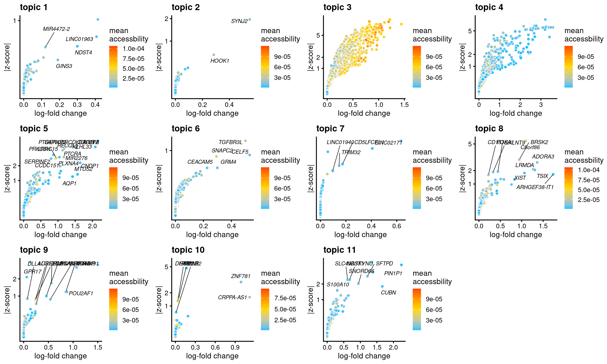
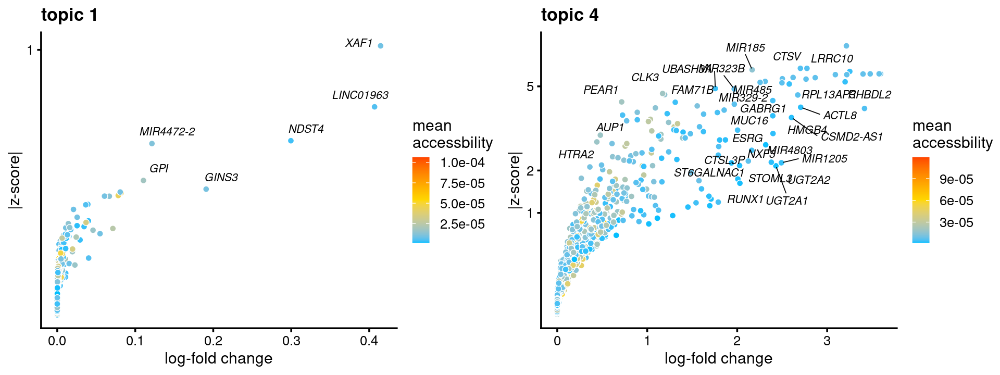
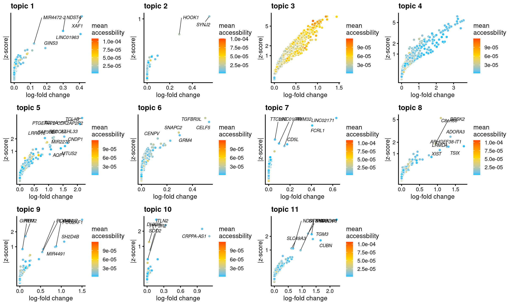
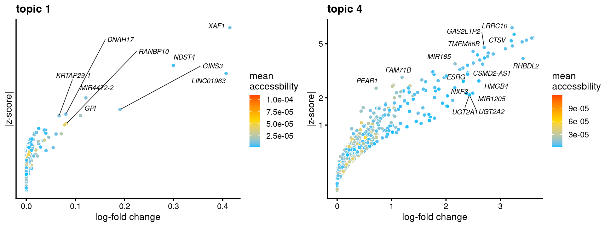
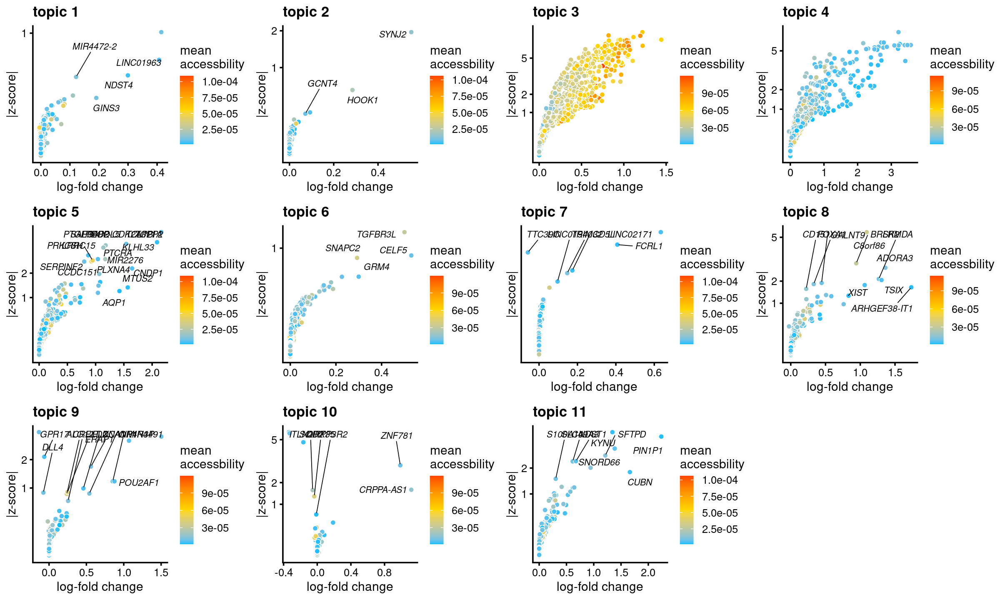
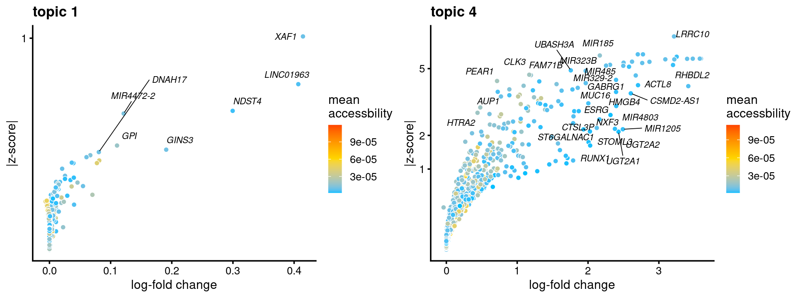
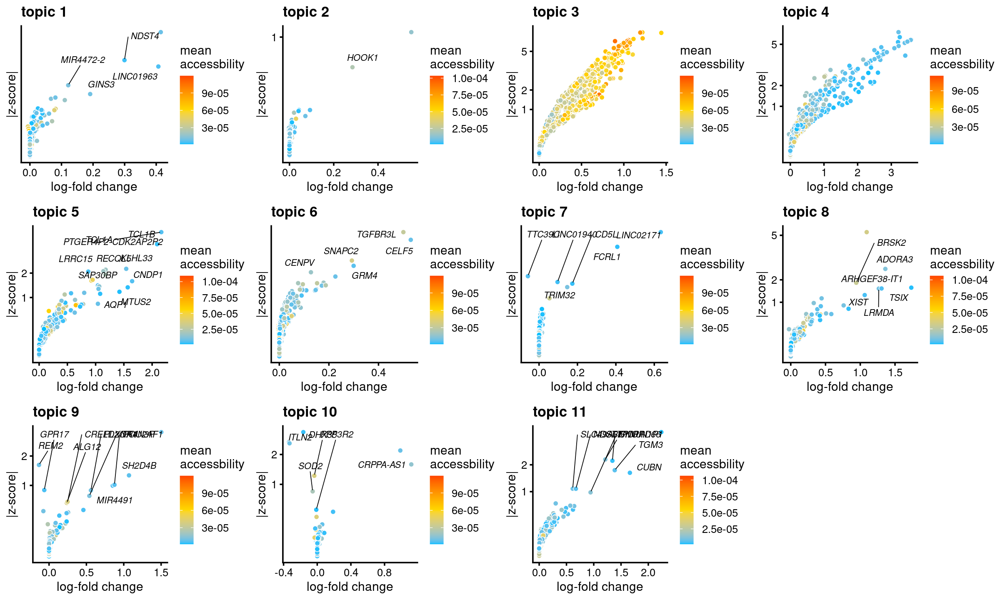
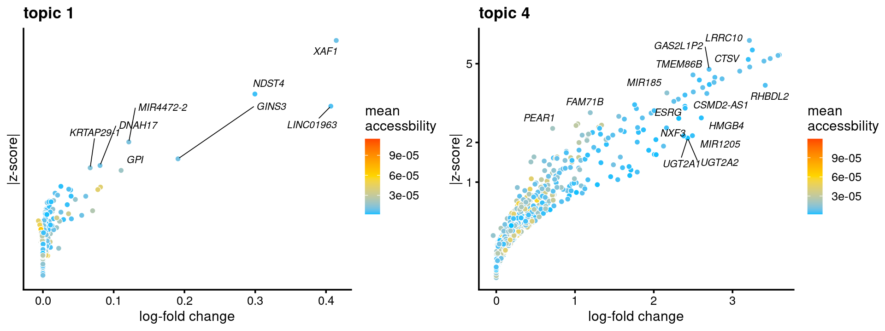
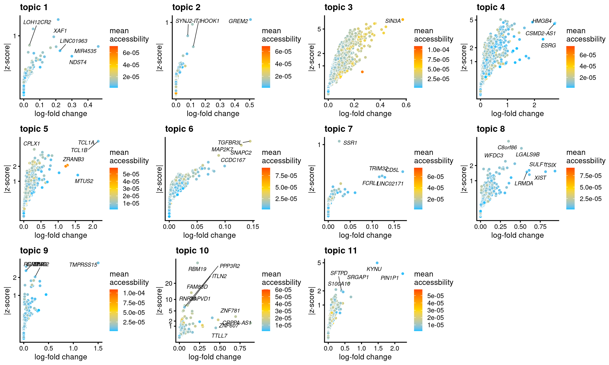
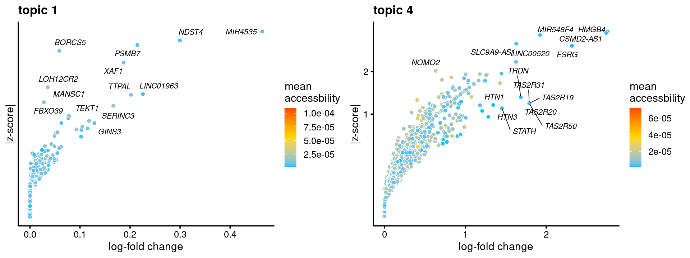

Gene analysis using topic modeling and DA results (v2) for Buenrostro et al (2018) scATAC-seq result (data processed using Chen 2019 pipeline)
Kaixuan Luo
Last updated: 2022-02-24
Checks: 7 0
Knit directory: scATACseq-topics/
This reproducible R Markdown analysis was created with workflowr (version 1.7.0). The Checks tab describes the reproducibility checks that were applied when the results were created. The Past versions tab lists the development history.
Great! Since the R Markdown file has been committed to the Git repository, you know the exact version of the code that produced these results.
Great job! The global environment was empty. Objects defined in the global environment can affect the analysis in your R Markdown file in unknown ways. For reproduciblity it's best to always run the code in an empty environment.
The command set.seed(20200729) was run prior to running the code in the R Markdown file. Setting a seed ensures that any results that rely on randomness, e.g. subsampling or permutations, are reproducible.
Great job! Recording the operating system, R version, and package versions is critical for reproducibility.
Nice! There were no cached chunks for this analysis, so you can be confident that you successfully produced the results during this run.
Great job! Using relative paths to the files within your workflowr project makes it easier to run your code on other machines.
Great! You are using Git for version control. Tracking code development and connecting the code version to the results is critical for reproducibility.
The results in this page were generated with repository version f05e211. See the Past versions tab to see a history of the changes made to the R Markdown and HTML files.
Note that you need to be careful to ensure that all relevant files for the analysis have been committed to Git prior to generating the results (you can use wflow_publish or wflow_git_commit). workflowr only checks the R Markdown file, but you know if there are other scripts or data files that it depends on. Below is the status of the Git repository when the results were generated:
Ignored files:
Ignored: .DS_Store
Ignored: .Rhistory
Ignored: .Rproj.user/
Untracked files:
Untracked: analysis/analysis_Buenrostro2018_k10.Rmd
Untracked: analysis/clusters_Buenrostro2018_k10_Chen2019pipeline.Rmd
Untracked: analysis/process_data_Buenrostro2018_Chen2019.Rmd
Untracked: analysis/selected_figures_Buenrostro2018.Rmd
Untracked: analysis/test_structure_plots_Buenrostro2018_k11_Chen2019pipeline.Rmd
Untracked: gsea_b_cells.html
Untracked: output/clustering-Cusanovich2018.rds
Untracked: paper/
Untracked: scripts/fit_all_models_Buenrostro_2018_chromVar_scPeaks_filtered.sbatch
Untracked: scripts/fit_models_Cusanovich2018_tissues.sh
Untracked: scripts/postfit_Buenrostro2018_Chen2019pipeline_v2.sh
Untracked: scripts/postfit_Cusanovich2018_v2.sh
Untracked: scripts/postfit_DA_analysis.sbatch
Untracked: topic1.html
Unstaged changes:
Modified: .gitignore
Modified: analysis/clusters_Cusanovich2018_k13.Rmd
Modified: analysis/gene_analysis_Buenrostro2018_Chen2019pipeline.Rmd
Modified: analysis/gene_analysis_Cusanovich2018.Rmd
Modified: analysis/gene_analysis_Cusanovich2018_v2.Rmd
Modified: analysis/motif_analysis_Buenrostro2018_Chen2019pipeline.Rmd
Modified: analysis/motif_analysis_Cusanovich2018.Rmd
Modified: analysis/plots_Cusanovich2018.Rmd
Deleted: output/plotly/Cusanovich2018/gsea_topic_10_genebody-sum_files/crosstalk-1.1.0.1/css/crosstalk.css
Deleted: output/plotly/Cusanovich2018/gsea_topic_10_genebody-sum_files/crosstalk-1.1.0.1/js/crosstalk.js
Deleted: output/plotly/Cusanovich2018/gsea_topic_10_genebody-sum_files/crosstalk-1.1.0.1/js/crosstalk.js.map
Deleted: output/plotly/Cusanovich2018/gsea_topic_10_genebody-sum_files/crosstalk-1.1.0.1/js/crosstalk.min.js
Deleted: output/plotly/Cusanovich2018/gsea_topic_10_genebody-sum_files/crosstalk-1.1.0.1/js/crosstalk.min.js.map
Deleted: output/plotly/Cusanovich2018/gsea_topic_10_genebody-sum_files/htmlwidgets-1.5.3/htmlwidgets.js
Deleted: output/plotly/Cusanovich2018/gsea_topic_10_genebody-sum_files/jquery-1.11.3/jquery-AUTHORS.txt
Deleted: output/plotly/Cusanovich2018/gsea_topic_10_genebody-sum_files/jquery-1.11.3/jquery.js
Deleted: output/plotly/Cusanovich2018/gsea_topic_10_genebody-sum_files/jquery-1.11.3/jquery.min.js
Deleted: output/plotly/Cusanovich2018/gsea_topic_10_genebody-sum_files/jquery-1.11.3/jquery.min.map
Deleted: output/plotly/Cusanovich2018/gsea_topic_10_genebody-sum_files/plotly-binding-4.9.2.1/plotly.js
Deleted: output/plotly/Cusanovich2018/gsea_topic_10_genebody-sum_files/plotly-htmlwidgets-css-1.52.2/plotly-htmlwidgets.css
Deleted: output/plotly/Cusanovich2018/gsea_topic_10_genebody-sum_files/plotly-main-1.52.2/plotly-latest.min.js
Deleted: output/plotly/Cusanovich2018/gsea_topic_10_genebody-sum_files/typedarray-0.1/typedarray.min.js
Deleted: output/plotly/Cusanovich2018/gsea_topic_10_tss-sum_files/crosstalk-1.1.0.1/css/crosstalk.css
Deleted: output/plotly/Cusanovich2018/gsea_topic_10_tss-sum_files/crosstalk-1.1.0.1/js/crosstalk.js
Deleted: output/plotly/Cusanovich2018/gsea_topic_10_tss-sum_files/crosstalk-1.1.0.1/js/crosstalk.js.map
Deleted: output/plotly/Cusanovich2018/gsea_topic_10_tss-sum_files/crosstalk-1.1.0.1/js/crosstalk.min.js
Deleted: output/plotly/Cusanovich2018/gsea_topic_10_tss-sum_files/crosstalk-1.1.0.1/js/crosstalk.min.js.map
Deleted: output/plotly/Cusanovich2018/gsea_topic_10_tss-sum_files/htmlwidgets-1.5.3/htmlwidgets.js
Deleted: output/plotly/Cusanovich2018/gsea_topic_10_tss-sum_files/jquery-1.11.3/jquery-AUTHORS.txt
Deleted: output/plotly/Cusanovich2018/gsea_topic_10_tss-sum_files/jquery-1.11.3/jquery.js
Deleted: output/plotly/Cusanovich2018/gsea_topic_10_tss-sum_files/jquery-1.11.3/jquery.min.js
Deleted: output/plotly/Cusanovich2018/gsea_topic_10_tss-sum_files/jquery-1.11.3/jquery.min.map
Deleted: output/plotly/Cusanovich2018/gsea_topic_10_tss-sum_files/plotly-binding-4.9.2.1/plotly.js
Deleted: output/plotly/Cusanovich2018/gsea_topic_10_tss-sum_files/plotly-htmlwidgets-css-1.52.2/plotly-htmlwidgets.css
Deleted: output/plotly/Cusanovich2018/gsea_topic_10_tss-sum_files/plotly-main-1.52.2/plotly-latest.min.js
Deleted: output/plotly/Cusanovich2018/gsea_topic_10_tss-sum_files/typedarray-0.1/typedarray.min.js
Deleted: output/plotly/Cusanovich2018/gsea_topic_11_genebody-sum_files/crosstalk-1.1.0.1/css/crosstalk.css
Deleted: output/plotly/Cusanovich2018/gsea_topic_11_genebody-sum_files/crosstalk-1.1.0.1/js/crosstalk.js
Deleted: output/plotly/Cusanovich2018/gsea_topic_11_genebody-sum_files/crosstalk-1.1.0.1/js/crosstalk.js.map
Deleted: output/plotly/Cusanovich2018/gsea_topic_11_genebody-sum_files/crosstalk-1.1.0.1/js/crosstalk.min.js
Deleted: output/plotly/Cusanovich2018/gsea_topic_11_genebody-sum_files/crosstalk-1.1.0.1/js/crosstalk.min.js.map
Deleted: output/plotly/Cusanovich2018/gsea_topic_11_genebody-sum_files/htmlwidgets-1.5.3/htmlwidgets.js
Deleted: output/plotly/Cusanovich2018/gsea_topic_11_genebody-sum_files/jquery-1.11.3/jquery-AUTHORS.txt
Deleted: output/plotly/Cusanovich2018/gsea_topic_11_genebody-sum_files/jquery-1.11.3/jquery.js
Deleted: output/plotly/Cusanovich2018/gsea_topic_11_genebody-sum_files/jquery-1.11.3/jquery.min.js
Deleted: output/plotly/Cusanovich2018/gsea_topic_11_genebody-sum_files/jquery-1.11.3/jquery.min.map
Deleted: output/plotly/Cusanovich2018/gsea_topic_11_genebody-sum_files/plotly-binding-4.9.2.1/plotly.js
Deleted: output/plotly/Cusanovich2018/gsea_topic_11_genebody-sum_files/plotly-htmlwidgets-css-1.52.2/plotly-htmlwidgets.css
Deleted: output/plotly/Cusanovich2018/gsea_topic_11_genebody-sum_files/plotly-main-1.52.2/plotly-latest.min.js
Deleted: output/plotly/Cusanovich2018/gsea_topic_11_genebody-sum_files/typedarray-0.1/typedarray.min.js
Deleted: output/plotly/Cusanovich2018/gsea_topic_11_tss-sum_files/crosstalk-1.1.0.1/css/crosstalk.css
Deleted: output/plotly/Cusanovich2018/gsea_topic_11_tss-sum_files/crosstalk-1.1.0.1/js/crosstalk.js
Deleted: output/plotly/Cusanovich2018/gsea_topic_11_tss-sum_files/crosstalk-1.1.0.1/js/crosstalk.js.map
Deleted: output/plotly/Cusanovich2018/gsea_topic_11_tss-sum_files/crosstalk-1.1.0.1/js/crosstalk.min.js
Deleted: output/plotly/Cusanovich2018/gsea_topic_11_tss-sum_files/crosstalk-1.1.0.1/js/crosstalk.min.js.map
Deleted: output/plotly/Cusanovich2018/gsea_topic_11_tss-sum_files/htmlwidgets-1.5.3/htmlwidgets.js
Deleted: output/plotly/Cusanovich2018/gsea_topic_11_tss-sum_files/jquery-1.11.3/jquery-AUTHORS.txt
Deleted: output/plotly/Cusanovich2018/gsea_topic_11_tss-sum_files/jquery-1.11.3/jquery.js
Deleted: output/plotly/Cusanovich2018/gsea_topic_11_tss-sum_files/jquery-1.11.3/jquery.min.js
Deleted: output/plotly/Cusanovich2018/gsea_topic_11_tss-sum_files/jquery-1.11.3/jquery.min.map
Deleted: output/plotly/Cusanovich2018/gsea_topic_11_tss-sum_files/plotly-binding-4.9.2.1/plotly.js
Deleted: output/plotly/Cusanovich2018/gsea_topic_11_tss-sum_files/plotly-htmlwidgets-css-1.52.2/plotly-htmlwidgets.css
Deleted: output/plotly/Cusanovich2018/gsea_topic_11_tss-sum_files/plotly-main-1.52.2/plotly-latest.min.js
Deleted: output/plotly/Cusanovich2018/gsea_topic_11_tss-sum_files/typedarray-0.1/typedarray.min.js
Deleted: output/plotly/Cusanovich2018/gsea_topic_12_genebody-sum_files/crosstalk-1.1.0.1/css/crosstalk.css
Deleted: output/plotly/Cusanovich2018/gsea_topic_12_genebody-sum_files/crosstalk-1.1.0.1/js/crosstalk.js
Deleted: output/plotly/Cusanovich2018/gsea_topic_12_genebody-sum_files/crosstalk-1.1.0.1/js/crosstalk.js.map
Deleted: output/plotly/Cusanovich2018/gsea_topic_12_genebody-sum_files/crosstalk-1.1.0.1/js/crosstalk.min.js
Deleted: output/plotly/Cusanovich2018/gsea_topic_12_genebody-sum_files/crosstalk-1.1.0.1/js/crosstalk.min.js.map
Deleted: output/plotly/Cusanovich2018/gsea_topic_12_genebody-sum_files/htmlwidgets-1.5.3/htmlwidgets.js
Deleted: output/plotly/Cusanovich2018/gsea_topic_12_genebody-sum_files/jquery-1.11.3/jquery-AUTHORS.txt
Deleted: output/plotly/Cusanovich2018/gsea_topic_12_genebody-sum_files/jquery-1.11.3/jquery.js
Deleted: output/plotly/Cusanovich2018/gsea_topic_12_genebody-sum_files/jquery-1.11.3/jquery.min.js
Deleted: output/plotly/Cusanovich2018/gsea_topic_12_genebody-sum_files/jquery-1.11.3/jquery.min.map
Deleted: output/plotly/Cusanovich2018/gsea_topic_12_genebody-sum_files/plotly-binding-4.9.2.1/plotly.js
Deleted: output/plotly/Cusanovich2018/gsea_topic_12_genebody-sum_files/plotly-htmlwidgets-css-1.52.2/plotly-htmlwidgets.css
Deleted: output/plotly/Cusanovich2018/gsea_topic_12_genebody-sum_files/plotly-main-1.52.2/plotly-latest.min.js
Deleted: output/plotly/Cusanovich2018/gsea_topic_12_genebody-sum_files/typedarray-0.1/typedarray.min.js
Deleted: output/plotly/Cusanovich2018/gsea_topic_12_tss-sum_files/crosstalk-1.1.0.1/css/crosstalk.css
Deleted: output/plotly/Cusanovich2018/gsea_topic_12_tss-sum_files/crosstalk-1.1.0.1/js/crosstalk.js
Deleted: output/plotly/Cusanovich2018/gsea_topic_12_tss-sum_files/crosstalk-1.1.0.1/js/crosstalk.js.map
Deleted: output/plotly/Cusanovich2018/gsea_topic_12_tss-sum_files/crosstalk-1.1.0.1/js/crosstalk.min.js
Deleted: output/plotly/Cusanovich2018/gsea_topic_12_tss-sum_files/crosstalk-1.1.0.1/js/crosstalk.min.js.map
Deleted: output/plotly/Cusanovich2018/gsea_topic_12_tss-sum_files/htmlwidgets-1.5.3/htmlwidgets.js
Deleted: output/plotly/Cusanovich2018/gsea_topic_12_tss-sum_files/jquery-1.11.3/jquery-AUTHORS.txt
Deleted: output/plotly/Cusanovich2018/gsea_topic_12_tss-sum_files/jquery-1.11.3/jquery.js
Deleted: output/plotly/Cusanovich2018/gsea_topic_12_tss-sum_files/jquery-1.11.3/jquery.min.js
Deleted: output/plotly/Cusanovich2018/gsea_topic_12_tss-sum_files/jquery-1.11.3/jquery.min.map
Deleted: output/plotly/Cusanovich2018/gsea_topic_12_tss-sum_files/plotly-binding-4.9.2.1/plotly.js
Deleted: output/plotly/Cusanovich2018/gsea_topic_12_tss-sum_files/plotly-htmlwidgets-css-1.52.2/plotly-htmlwidgets.css
Deleted: output/plotly/Cusanovich2018/gsea_topic_12_tss-sum_files/plotly-main-1.52.2/plotly-latest.min.js
Deleted: output/plotly/Cusanovich2018/gsea_topic_12_tss-sum_files/typedarray-0.1/typedarray.min.js
Deleted: output/plotly/Cusanovich2018/gsea_topic_13_genebody-sum_files/crosstalk-1.1.0.1/css/crosstalk.css
Deleted: output/plotly/Cusanovich2018/gsea_topic_13_genebody-sum_files/crosstalk-1.1.0.1/js/crosstalk.js
Deleted: output/plotly/Cusanovich2018/gsea_topic_13_genebody-sum_files/crosstalk-1.1.0.1/js/crosstalk.js.map
Deleted: output/plotly/Cusanovich2018/gsea_topic_13_genebody-sum_files/crosstalk-1.1.0.1/js/crosstalk.min.js
Deleted: output/plotly/Cusanovich2018/gsea_topic_13_genebody-sum_files/crosstalk-1.1.0.1/js/crosstalk.min.js.map
Deleted: output/plotly/Cusanovich2018/gsea_topic_13_genebody-sum_files/htmlwidgets-1.5.3/htmlwidgets.js
Deleted: output/plotly/Cusanovich2018/gsea_topic_13_genebody-sum_files/jquery-1.11.3/jquery-AUTHORS.txt
Deleted: output/plotly/Cusanovich2018/gsea_topic_13_genebody-sum_files/jquery-1.11.3/jquery.js
Deleted: output/plotly/Cusanovich2018/gsea_topic_13_genebody-sum_files/jquery-1.11.3/jquery.min.js
Deleted: output/plotly/Cusanovich2018/gsea_topic_13_genebody-sum_files/jquery-1.11.3/jquery.min.map
Deleted: output/plotly/Cusanovich2018/gsea_topic_13_genebody-sum_files/plotly-binding-4.9.2.1/plotly.js
Deleted: output/plotly/Cusanovich2018/gsea_topic_13_genebody-sum_files/plotly-htmlwidgets-css-1.52.2/plotly-htmlwidgets.css
Deleted: output/plotly/Cusanovich2018/gsea_topic_13_genebody-sum_files/plotly-main-1.52.2/plotly-latest.min.js
Deleted: output/plotly/Cusanovich2018/gsea_topic_13_genebody-sum_files/typedarray-0.1/typedarray.min.js
Deleted: output/plotly/Cusanovich2018/gsea_topic_13_tss-sum_files/crosstalk-1.1.0.1/css/crosstalk.css
Deleted: output/plotly/Cusanovich2018/gsea_topic_13_tss-sum_files/crosstalk-1.1.0.1/js/crosstalk.js
Deleted: output/plotly/Cusanovich2018/gsea_topic_13_tss-sum_files/crosstalk-1.1.0.1/js/crosstalk.js.map
Deleted: output/plotly/Cusanovich2018/gsea_topic_13_tss-sum_files/crosstalk-1.1.0.1/js/crosstalk.min.js
Deleted: output/plotly/Cusanovich2018/gsea_topic_13_tss-sum_files/crosstalk-1.1.0.1/js/crosstalk.min.js.map
Deleted: output/plotly/Cusanovich2018/gsea_topic_13_tss-sum_files/htmlwidgets-1.5.3/htmlwidgets.js
Deleted: output/plotly/Cusanovich2018/gsea_topic_13_tss-sum_files/jquery-1.11.3/jquery-AUTHORS.txt
Deleted: output/plotly/Cusanovich2018/gsea_topic_13_tss-sum_files/jquery-1.11.3/jquery.js
Deleted: output/plotly/Cusanovich2018/gsea_topic_13_tss-sum_files/jquery-1.11.3/jquery.min.js
Deleted: output/plotly/Cusanovich2018/gsea_topic_13_tss-sum_files/jquery-1.11.3/jquery.min.map
Deleted: output/plotly/Cusanovich2018/gsea_topic_13_tss-sum_files/plotly-binding-4.9.2.1/plotly.js
Deleted: output/plotly/Cusanovich2018/gsea_topic_13_tss-sum_files/plotly-htmlwidgets-css-1.52.2/plotly-htmlwidgets.css
Deleted: output/plotly/Cusanovich2018/gsea_topic_13_tss-sum_files/plotly-main-1.52.2/plotly-latest.min.js
Deleted: output/plotly/Cusanovich2018/gsea_topic_13_tss-sum_files/typedarray-0.1/typedarray.min.js
Deleted: output/plotly/Cusanovich2018/gsea_topic_1_genebody-sum_files/crosstalk-1.1.0.1/css/crosstalk.css
Deleted: output/plotly/Cusanovich2018/gsea_topic_1_genebody-sum_files/crosstalk-1.1.0.1/js/crosstalk.js
Deleted: output/plotly/Cusanovich2018/gsea_topic_1_genebody-sum_files/crosstalk-1.1.0.1/js/crosstalk.js.map
Deleted: output/plotly/Cusanovich2018/gsea_topic_1_genebody-sum_files/crosstalk-1.1.0.1/js/crosstalk.min.js
Deleted: output/plotly/Cusanovich2018/gsea_topic_1_genebody-sum_files/crosstalk-1.1.0.1/js/crosstalk.min.js.map
Deleted: output/plotly/Cusanovich2018/gsea_topic_1_genebody-sum_files/htmlwidgets-1.5.3/htmlwidgets.js
Deleted: output/plotly/Cusanovich2018/gsea_topic_1_genebody-sum_files/jquery-1.11.3/jquery-AUTHORS.txt
Deleted: output/plotly/Cusanovich2018/gsea_topic_1_genebody-sum_files/jquery-1.11.3/jquery.js
Deleted: output/plotly/Cusanovich2018/gsea_topic_1_genebody-sum_files/jquery-1.11.3/jquery.min.js
Deleted: output/plotly/Cusanovich2018/gsea_topic_1_genebody-sum_files/jquery-1.11.3/jquery.min.map
Deleted: output/plotly/Cusanovich2018/gsea_topic_1_genebody-sum_files/plotly-binding-4.9.2.1/plotly.js
Deleted: output/plotly/Cusanovich2018/gsea_topic_1_genebody-sum_files/plotly-htmlwidgets-css-1.52.2/plotly-htmlwidgets.css
Deleted: output/plotly/Cusanovich2018/gsea_topic_1_genebody-sum_files/plotly-main-1.52.2/plotly-latest.min.js
Deleted: output/plotly/Cusanovich2018/gsea_topic_1_genebody-sum_files/typedarray-0.1/typedarray.min.js
Deleted: output/plotly/Cusanovich2018/gsea_topic_1_tss-sum_files/crosstalk-1.1.0.1/css/crosstalk.css
Deleted: output/plotly/Cusanovich2018/gsea_topic_1_tss-sum_files/crosstalk-1.1.0.1/js/crosstalk.js
Deleted: output/plotly/Cusanovich2018/gsea_topic_1_tss-sum_files/crosstalk-1.1.0.1/js/crosstalk.js.map
Deleted: output/plotly/Cusanovich2018/gsea_topic_1_tss-sum_files/crosstalk-1.1.0.1/js/crosstalk.min.js
Deleted: output/plotly/Cusanovich2018/gsea_topic_1_tss-sum_files/crosstalk-1.1.0.1/js/crosstalk.min.js.map
Deleted: output/plotly/Cusanovich2018/gsea_topic_1_tss-sum_files/htmlwidgets-1.5.3/htmlwidgets.js
Deleted: output/plotly/Cusanovich2018/gsea_topic_1_tss-sum_files/jquery-1.11.3/jquery-AUTHORS.txt
Deleted: output/plotly/Cusanovich2018/gsea_topic_1_tss-sum_files/jquery-1.11.3/jquery.js
Deleted: output/plotly/Cusanovich2018/gsea_topic_1_tss-sum_files/jquery-1.11.3/jquery.min.js
Deleted: output/plotly/Cusanovich2018/gsea_topic_1_tss-sum_files/jquery-1.11.3/jquery.min.map
Deleted: output/plotly/Cusanovich2018/gsea_topic_1_tss-sum_files/plotly-binding-4.9.2.1/plotly.js
Deleted: output/plotly/Cusanovich2018/gsea_topic_1_tss-sum_files/plotly-htmlwidgets-css-1.52.2/plotly-htmlwidgets.css
Deleted: output/plotly/Cusanovich2018/gsea_topic_1_tss-sum_files/plotly-main-1.52.2/plotly-latest.min.js
Deleted: output/plotly/Cusanovich2018/gsea_topic_1_tss-sum_files/typedarray-0.1/typedarray.min.js
Deleted: output/plotly/Cusanovich2018/gsea_topic_2_genebody-sum_files/crosstalk-1.1.0.1/css/crosstalk.css
Deleted: output/plotly/Cusanovich2018/gsea_topic_2_genebody-sum_files/crosstalk-1.1.0.1/js/crosstalk.js
Deleted: output/plotly/Cusanovich2018/gsea_topic_2_genebody-sum_files/crosstalk-1.1.0.1/js/crosstalk.js.map
Deleted: output/plotly/Cusanovich2018/gsea_topic_2_genebody-sum_files/crosstalk-1.1.0.1/js/crosstalk.min.js
Deleted: output/plotly/Cusanovich2018/gsea_topic_2_genebody-sum_files/crosstalk-1.1.0.1/js/crosstalk.min.js.map
Deleted: output/plotly/Cusanovich2018/gsea_topic_2_genebody-sum_files/htmlwidgets-1.5.3/htmlwidgets.js
Deleted: output/plotly/Cusanovich2018/gsea_topic_2_genebody-sum_files/jquery-1.11.3/jquery-AUTHORS.txt
Deleted: output/plotly/Cusanovich2018/gsea_topic_2_genebody-sum_files/jquery-1.11.3/jquery.js
Deleted: output/plotly/Cusanovich2018/gsea_topic_2_genebody-sum_files/jquery-1.11.3/jquery.min.js
Deleted: output/plotly/Cusanovich2018/gsea_topic_2_genebody-sum_files/jquery-1.11.3/jquery.min.map
Deleted: output/plotly/Cusanovich2018/gsea_topic_2_genebody-sum_files/plotly-binding-4.9.2.1/plotly.js
Deleted: output/plotly/Cusanovich2018/gsea_topic_2_genebody-sum_files/plotly-htmlwidgets-css-1.52.2/plotly-htmlwidgets.css
Deleted: output/plotly/Cusanovich2018/gsea_topic_2_genebody-sum_files/plotly-main-1.52.2/plotly-latest.min.js
Deleted: output/plotly/Cusanovich2018/gsea_topic_2_genebody-sum_files/typedarray-0.1/typedarray.min.js
Deleted: output/plotly/Cusanovich2018/gsea_topic_2_tss-sum_files/crosstalk-1.1.0.1/css/crosstalk.css
Deleted: output/plotly/Cusanovich2018/gsea_topic_2_tss-sum_files/crosstalk-1.1.0.1/js/crosstalk.js
Deleted: output/plotly/Cusanovich2018/gsea_topic_2_tss-sum_files/crosstalk-1.1.0.1/js/crosstalk.js.map
Deleted: output/plotly/Cusanovich2018/gsea_topic_2_tss-sum_files/crosstalk-1.1.0.1/js/crosstalk.min.js
Deleted: output/plotly/Cusanovich2018/gsea_topic_2_tss-sum_files/crosstalk-1.1.0.1/js/crosstalk.min.js.map
Deleted: output/plotly/Cusanovich2018/gsea_topic_2_tss-sum_files/htmlwidgets-1.5.3/htmlwidgets.js
Deleted: output/plotly/Cusanovich2018/gsea_topic_2_tss-sum_files/jquery-1.11.3/jquery-AUTHORS.txt
Deleted: output/plotly/Cusanovich2018/gsea_topic_2_tss-sum_files/jquery-1.11.3/jquery.js
Deleted: output/plotly/Cusanovich2018/gsea_topic_2_tss-sum_files/jquery-1.11.3/jquery.min.js
Deleted: output/plotly/Cusanovich2018/gsea_topic_2_tss-sum_files/jquery-1.11.3/jquery.min.map
Deleted: output/plotly/Cusanovich2018/gsea_topic_2_tss-sum_files/plotly-binding-4.9.2.1/plotly.js
Deleted: output/plotly/Cusanovich2018/gsea_topic_2_tss-sum_files/plotly-htmlwidgets-css-1.52.2/plotly-htmlwidgets.css
Deleted: output/plotly/Cusanovich2018/gsea_topic_2_tss-sum_files/plotly-main-1.52.2/plotly-latest.min.js
Deleted: output/plotly/Cusanovich2018/gsea_topic_2_tss-sum_files/typedarray-0.1/typedarray.min.js
Deleted: output/plotly/Cusanovich2018/gsea_topic_3_genebody-sum_files/crosstalk-1.1.0.1/css/crosstalk.css
Deleted: output/plotly/Cusanovich2018/gsea_topic_3_genebody-sum_files/crosstalk-1.1.0.1/js/crosstalk.js
Deleted: output/plotly/Cusanovich2018/gsea_topic_3_genebody-sum_files/crosstalk-1.1.0.1/js/crosstalk.js.map
Deleted: output/plotly/Cusanovich2018/gsea_topic_3_genebody-sum_files/crosstalk-1.1.0.1/js/crosstalk.min.js
Deleted: output/plotly/Cusanovich2018/gsea_topic_3_genebody-sum_files/crosstalk-1.1.0.1/js/crosstalk.min.js.map
Deleted: output/plotly/Cusanovich2018/gsea_topic_3_genebody-sum_files/htmlwidgets-1.5.3/htmlwidgets.js
Deleted: output/plotly/Cusanovich2018/gsea_topic_3_genebody-sum_files/jquery-1.11.3/jquery-AUTHORS.txt
Deleted: output/plotly/Cusanovich2018/gsea_topic_3_genebody-sum_files/jquery-1.11.3/jquery.js
Deleted: output/plotly/Cusanovich2018/gsea_topic_3_genebody-sum_files/jquery-1.11.3/jquery.min.js
Deleted: output/plotly/Cusanovich2018/gsea_topic_3_genebody-sum_files/jquery-1.11.3/jquery.min.map
Deleted: output/plotly/Cusanovich2018/gsea_topic_3_genebody-sum_files/plotly-binding-4.9.2.1/plotly.js
Deleted: output/plotly/Cusanovich2018/gsea_topic_3_genebody-sum_files/plotly-htmlwidgets-css-1.52.2/plotly-htmlwidgets.css
Deleted: output/plotly/Cusanovich2018/gsea_topic_3_genebody-sum_files/plotly-main-1.52.2/plotly-latest.min.js
Deleted: output/plotly/Cusanovich2018/gsea_topic_3_genebody-sum_files/typedarray-0.1/typedarray.min.js
Deleted: output/plotly/Cusanovich2018/gsea_topic_3_tss-sum_files/crosstalk-1.1.0.1/css/crosstalk.css
Deleted: output/plotly/Cusanovich2018/gsea_topic_3_tss-sum_files/crosstalk-1.1.0.1/js/crosstalk.js
Deleted: output/plotly/Cusanovich2018/gsea_topic_3_tss-sum_files/crosstalk-1.1.0.1/js/crosstalk.js.map
Deleted: output/plotly/Cusanovich2018/gsea_topic_3_tss-sum_files/crosstalk-1.1.0.1/js/crosstalk.min.js
Deleted: output/plotly/Cusanovich2018/gsea_topic_3_tss-sum_files/crosstalk-1.1.0.1/js/crosstalk.min.js.map
Deleted: output/plotly/Cusanovich2018/gsea_topic_3_tss-sum_files/htmlwidgets-1.5.3/htmlwidgets.js
Deleted: output/plotly/Cusanovich2018/gsea_topic_3_tss-sum_files/jquery-1.11.3/jquery-AUTHORS.txt
Deleted: output/plotly/Cusanovich2018/gsea_topic_3_tss-sum_files/jquery-1.11.3/jquery.js
Deleted: output/plotly/Cusanovich2018/gsea_topic_3_tss-sum_files/jquery-1.11.3/jquery.min.js
Deleted: output/plotly/Cusanovich2018/gsea_topic_3_tss-sum_files/jquery-1.11.3/jquery.min.map
Deleted: output/plotly/Cusanovich2018/gsea_topic_3_tss-sum_files/plotly-binding-4.9.2.1/plotly.js
Deleted: output/plotly/Cusanovich2018/gsea_topic_3_tss-sum_files/plotly-htmlwidgets-css-1.52.2/plotly-htmlwidgets.css
Deleted: output/plotly/Cusanovich2018/gsea_topic_3_tss-sum_files/plotly-main-1.52.2/plotly-latest.min.js
Deleted: output/plotly/Cusanovich2018/gsea_topic_3_tss-sum_files/typedarray-0.1/typedarray.min.js
Deleted: output/plotly/Cusanovich2018/gsea_topic_4_genebody-sum_files/crosstalk-1.1.0.1/css/crosstalk.css
Deleted: output/plotly/Cusanovich2018/gsea_topic_4_genebody-sum_files/crosstalk-1.1.0.1/js/crosstalk.js
Deleted: output/plotly/Cusanovich2018/gsea_topic_4_genebody-sum_files/crosstalk-1.1.0.1/js/crosstalk.js.map
Deleted: output/plotly/Cusanovich2018/gsea_topic_4_genebody-sum_files/crosstalk-1.1.0.1/js/crosstalk.min.js
Deleted: output/plotly/Cusanovich2018/gsea_topic_4_genebody-sum_files/crosstalk-1.1.0.1/js/crosstalk.min.js.map
Deleted: output/plotly/Cusanovich2018/gsea_topic_4_genebody-sum_files/htmlwidgets-1.5.3/htmlwidgets.js
Deleted: output/plotly/Cusanovich2018/gsea_topic_4_genebody-sum_files/jquery-1.11.3/jquery-AUTHORS.txt
Deleted: output/plotly/Cusanovich2018/gsea_topic_4_genebody-sum_files/jquery-1.11.3/jquery.js
Deleted: output/plotly/Cusanovich2018/gsea_topic_4_genebody-sum_files/jquery-1.11.3/jquery.min.js
Deleted: output/plotly/Cusanovich2018/gsea_topic_4_genebody-sum_files/jquery-1.11.3/jquery.min.map
Deleted: output/plotly/Cusanovich2018/gsea_topic_4_genebody-sum_files/plotly-binding-4.9.2.1/plotly.js
Deleted: output/plotly/Cusanovich2018/gsea_topic_4_genebody-sum_files/plotly-htmlwidgets-css-1.52.2/plotly-htmlwidgets.css
Deleted: output/plotly/Cusanovich2018/gsea_topic_4_genebody-sum_files/plotly-main-1.52.2/plotly-latest.min.js
Deleted: output/plotly/Cusanovich2018/gsea_topic_4_genebody-sum_files/typedarray-0.1/typedarray.min.js
Deleted: output/plotly/Cusanovich2018/gsea_topic_4_tss-sum_files/crosstalk-1.1.0.1/css/crosstalk.css
Deleted: output/plotly/Cusanovich2018/gsea_topic_4_tss-sum_files/crosstalk-1.1.0.1/js/crosstalk.js
Deleted: output/plotly/Cusanovich2018/gsea_topic_4_tss-sum_files/crosstalk-1.1.0.1/js/crosstalk.js.map
Deleted: output/plotly/Cusanovich2018/gsea_topic_4_tss-sum_files/crosstalk-1.1.0.1/js/crosstalk.min.js
Deleted: output/plotly/Cusanovich2018/gsea_topic_4_tss-sum_files/crosstalk-1.1.0.1/js/crosstalk.min.js.map
Deleted: output/plotly/Cusanovich2018/gsea_topic_4_tss-sum_files/htmlwidgets-1.5.3/htmlwidgets.js
Deleted: output/plotly/Cusanovich2018/gsea_topic_4_tss-sum_files/jquery-1.11.3/jquery-AUTHORS.txt
Deleted: output/plotly/Cusanovich2018/gsea_topic_4_tss-sum_files/jquery-1.11.3/jquery.js
Deleted: output/plotly/Cusanovich2018/gsea_topic_4_tss-sum_files/jquery-1.11.3/jquery.min.js
Deleted: output/plotly/Cusanovich2018/gsea_topic_4_tss-sum_files/jquery-1.11.3/jquery.min.map
Deleted: output/plotly/Cusanovich2018/gsea_topic_4_tss-sum_files/plotly-binding-4.9.2.1/plotly.js
Deleted: output/plotly/Cusanovich2018/gsea_topic_4_tss-sum_files/plotly-htmlwidgets-css-1.52.2/plotly-htmlwidgets.css
Deleted: output/plotly/Cusanovich2018/gsea_topic_4_tss-sum_files/plotly-main-1.52.2/plotly-latest.min.js
Deleted: output/plotly/Cusanovich2018/gsea_topic_4_tss-sum_files/typedarray-0.1/typedarray.min.js
Deleted: output/plotly/Cusanovich2018/gsea_topic_5_genebody-sum_files/crosstalk-1.1.0.1/css/crosstalk.css
Deleted: output/plotly/Cusanovich2018/gsea_topic_5_genebody-sum_files/crosstalk-1.1.0.1/js/crosstalk.js
Deleted: output/plotly/Cusanovich2018/gsea_topic_5_genebody-sum_files/crosstalk-1.1.0.1/js/crosstalk.js.map
Deleted: output/plotly/Cusanovich2018/gsea_topic_5_genebody-sum_files/crosstalk-1.1.0.1/js/crosstalk.min.js
Deleted: output/plotly/Cusanovich2018/gsea_topic_5_genebody-sum_files/crosstalk-1.1.0.1/js/crosstalk.min.js.map
Deleted: output/plotly/Cusanovich2018/gsea_topic_5_genebody-sum_files/htmlwidgets-1.5.3/htmlwidgets.js
Deleted: output/plotly/Cusanovich2018/gsea_topic_5_genebody-sum_files/jquery-1.11.3/jquery-AUTHORS.txt
Deleted: output/plotly/Cusanovich2018/gsea_topic_5_genebody-sum_files/jquery-1.11.3/jquery.js
Deleted: output/plotly/Cusanovich2018/gsea_topic_5_genebody-sum_files/jquery-1.11.3/jquery.min.js
Deleted: output/plotly/Cusanovich2018/gsea_topic_5_genebody-sum_files/jquery-1.11.3/jquery.min.map
Deleted: output/plotly/Cusanovich2018/gsea_topic_5_genebody-sum_files/plotly-binding-4.9.2.1/plotly.js
Deleted: output/plotly/Cusanovich2018/gsea_topic_5_genebody-sum_files/plotly-htmlwidgets-css-1.52.2/plotly-htmlwidgets.css
Deleted: output/plotly/Cusanovich2018/gsea_topic_5_genebody-sum_files/plotly-main-1.52.2/plotly-latest.min.js
Deleted: output/plotly/Cusanovich2018/gsea_topic_5_genebody-sum_files/typedarray-0.1/typedarray.min.js
Deleted: output/plotly/Cusanovich2018/gsea_topic_5_tss-sum_files/crosstalk-1.1.0.1/css/crosstalk.css
Deleted: output/plotly/Cusanovich2018/gsea_topic_5_tss-sum_files/crosstalk-1.1.0.1/js/crosstalk.js
Deleted: output/plotly/Cusanovich2018/gsea_topic_5_tss-sum_files/crosstalk-1.1.0.1/js/crosstalk.js.map
Deleted: output/plotly/Cusanovich2018/gsea_topic_5_tss-sum_files/crosstalk-1.1.0.1/js/crosstalk.min.js
Deleted: output/plotly/Cusanovich2018/gsea_topic_5_tss-sum_files/crosstalk-1.1.0.1/js/crosstalk.min.js.map
Deleted: output/plotly/Cusanovich2018/gsea_topic_5_tss-sum_files/htmlwidgets-1.5.3/htmlwidgets.js
Deleted: output/plotly/Cusanovich2018/gsea_topic_5_tss-sum_files/jquery-1.11.3/jquery-AUTHORS.txt
Deleted: output/plotly/Cusanovich2018/gsea_topic_5_tss-sum_files/jquery-1.11.3/jquery.js
Deleted: output/plotly/Cusanovich2018/gsea_topic_5_tss-sum_files/jquery-1.11.3/jquery.min.js
Deleted: output/plotly/Cusanovich2018/gsea_topic_5_tss-sum_files/jquery-1.11.3/jquery.min.map
Deleted: output/plotly/Cusanovich2018/gsea_topic_5_tss-sum_files/plotly-binding-4.9.2.1/plotly.js
Deleted: output/plotly/Cusanovich2018/gsea_topic_5_tss-sum_files/plotly-htmlwidgets-css-1.52.2/plotly-htmlwidgets.css
Deleted: output/plotly/Cusanovich2018/gsea_topic_5_tss-sum_files/plotly-main-1.52.2/plotly-latest.min.js
Deleted: output/plotly/Cusanovich2018/gsea_topic_5_tss-sum_files/typedarray-0.1/typedarray.min.js
Deleted: output/plotly/Cusanovich2018/gsea_topic_6_genebody-sum_files/crosstalk-1.1.0.1/css/crosstalk.css
Deleted: output/plotly/Cusanovich2018/gsea_topic_6_genebody-sum_files/crosstalk-1.1.0.1/js/crosstalk.js
Deleted: output/plotly/Cusanovich2018/gsea_topic_6_genebody-sum_files/crosstalk-1.1.0.1/js/crosstalk.js.map
Deleted: output/plotly/Cusanovich2018/gsea_topic_6_genebody-sum_files/crosstalk-1.1.0.1/js/crosstalk.min.js
Deleted: output/plotly/Cusanovich2018/gsea_topic_6_genebody-sum_files/crosstalk-1.1.0.1/js/crosstalk.min.js.map
Deleted: output/plotly/Cusanovich2018/gsea_topic_6_genebody-sum_files/htmlwidgets-1.5.3/htmlwidgets.js
Deleted: output/plotly/Cusanovich2018/gsea_topic_6_genebody-sum_files/jquery-1.11.3/jquery-AUTHORS.txt
Deleted: output/plotly/Cusanovich2018/gsea_topic_6_genebody-sum_files/jquery-1.11.3/jquery.js
Deleted: output/plotly/Cusanovich2018/gsea_topic_6_genebody-sum_files/jquery-1.11.3/jquery.min.js
Deleted: output/plotly/Cusanovich2018/gsea_topic_6_genebody-sum_files/jquery-1.11.3/jquery.min.map
Deleted: output/plotly/Cusanovich2018/gsea_topic_6_genebody-sum_files/plotly-binding-4.9.2.1/plotly.js
Deleted: output/plotly/Cusanovich2018/gsea_topic_6_genebody-sum_files/plotly-htmlwidgets-css-1.52.2/plotly-htmlwidgets.css
Deleted: output/plotly/Cusanovich2018/gsea_topic_6_genebody-sum_files/plotly-main-1.52.2/plotly-latest.min.js
Deleted: output/plotly/Cusanovich2018/gsea_topic_6_genebody-sum_files/typedarray-0.1/typedarray.min.js
Deleted: output/plotly/Cusanovich2018/gsea_topic_6_tss-sum_files/crosstalk-1.1.0.1/css/crosstalk.css
Deleted: output/plotly/Cusanovich2018/gsea_topic_6_tss-sum_files/crosstalk-1.1.0.1/js/crosstalk.js
Deleted: output/plotly/Cusanovich2018/gsea_topic_6_tss-sum_files/crosstalk-1.1.0.1/js/crosstalk.js.map
Deleted: output/plotly/Cusanovich2018/gsea_topic_6_tss-sum_files/crosstalk-1.1.0.1/js/crosstalk.min.js
Deleted: output/plotly/Cusanovich2018/gsea_topic_6_tss-sum_files/crosstalk-1.1.0.1/js/crosstalk.min.js.map
Deleted: output/plotly/Cusanovich2018/gsea_topic_6_tss-sum_files/htmlwidgets-1.5.3/htmlwidgets.js
Deleted: output/plotly/Cusanovich2018/gsea_topic_6_tss-sum_files/jquery-1.11.3/jquery-AUTHORS.txt
Deleted: output/plotly/Cusanovich2018/gsea_topic_6_tss-sum_files/jquery-1.11.3/jquery.js
Deleted: output/plotly/Cusanovich2018/gsea_topic_6_tss-sum_files/jquery-1.11.3/jquery.min.js
Deleted: output/plotly/Cusanovich2018/gsea_topic_6_tss-sum_files/jquery-1.11.3/jquery.min.map
Deleted: output/plotly/Cusanovich2018/gsea_topic_6_tss-sum_files/plotly-binding-4.9.2.1/plotly.js
Deleted: output/plotly/Cusanovich2018/gsea_topic_6_tss-sum_files/plotly-htmlwidgets-css-1.52.2/plotly-htmlwidgets.css
Deleted: output/plotly/Cusanovich2018/gsea_topic_6_tss-sum_files/plotly-main-1.52.2/plotly-latest.min.js
Deleted: output/plotly/Cusanovich2018/gsea_topic_6_tss-sum_files/typedarray-0.1/typedarray.min.js
Deleted: output/plotly/Cusanovich2018/gsea_topic_7_genebody-sum_files/crosstalk-1.1.0.1/css/crosstalk.css
Deleted: output/plotly/Cusanovich2018/gsea_topic_7_genebody-sum_files/crosstalk-1.1.0.1/js/crosstalk.js
Deleted: output/plotly/Cusanovich2018/gsea_topic_7_genebody-sum_files/crosstalk-1.1.0.1/js/crosstalk.js.map
Deleted: output/plotly/Cusanovich2018/gsea_topic_7_genebody-sum_files/crosstalk-1.1.0.1/js/crosstalk.min.js
Deleted: output/plotly/Cusanovich2018/gsea_topic_7_genebody-sum_files/crosstalk-1.1.0.1/js/crosstalk.min.js.map
Deleted: output/plotly/Cusanovich2018/gsea_topic_7_genebody-sum_files/htmlwidgets-1.5.3/htmlwidgets.js
Deleted: output/plotly/Cusanovich2018/gsea_topic_7_genebody-sum_files/jquery-1.11.3/jquery-AUTHORS.txt
Deleted: output/plotly/Cusanovich2018/gsea_topic_7_genebody-sum_files/jquery-1.11.3/jquery.js
Deleted: output/plotly/Cusanovich2018/gsea_topic_7_genebody-sum_files/jquery-1.11.3/jquery.min.js
Deleted: output/plotly/Cusanovich2018/gsea_topic_7_genebody-sum_files/jquery-1.11.3/jquery.min.map
Deleted: output/plotly/Cusanovich2018/gsea_topic_7_genebody-sum_files/plotly-binding-4.9.2.1/plotly.js
Deleted: output/plotly/Cusanovich2018/gsea_topic_7_genebody-sum_files/plotly-htmlwidgets-css-1.52.2/plotly-htmlwidgets.css
Deleted: output/plotly/Cusanovich2018/gsea_topic_7_genebody-sum_files/plotly-main-1.52.2/plotly-latest.min.js
Deleted: output/plotly/Cusanovich2018/gsea_topic_7_genebody-sum_files/typedarray-0.1/typedarray.min.js
Deleted: output/plotly/Cusanovich2018/gsea_topic_7_tss-sum_files/crosstalk-1.1.0.1/css/crosstalk.css
Deleted: output/plotly/Cusanovich2018/gsea_topic_7_tss-sum_files/crosstalk-1.1.0.1/js/crosstalk.js
Deleted: output/plotly/Cusanovich2018/gsea_topic_7_tss-sum_files/crosstalk-1.1.0.1/js/crosstalk.js.map
Deleted: output/plotly/Cusanovich2018/gsea_topic_7_tss-sum_files/crosstalk-1.1.0.1/js/crosstalk.min.js
Deleted: output/plotly/Cusanovich2018/gsea_topic_7_tss-sum_files/crosstalk-1.1.0.1/js/crosstalk.min.js.map
Deleted: output/plotly/Cusanovich2018/gsea_topic_7_tss-sum_files/htmlwidgets-1.5.3/htmlwidgets.js
Deleted: output/plotly/Cusanovich2018/gsea_topic_7_tss-sum_files/jquery-1.11.3/jquery-AUTHORS.txt
Deleted: output/plotly/Cusanovich2018/gsea_topic_7_tss-sum_files/jquery-1.11.3/jquery.js
Deleted: output/plotly/Cusanovich2018/gsea_topic_7_tss-sum_files/jquery-1.11.3/jquery.min.js
Deleted: output/plotly/Cusanovich2018/gsea_topic_7_tss-sum_files/jquery-1.11.3/jquery.min.map
Deleted: output/plotly/Cusanovich2018/gsea_topic_7_tss-sum_files/plotly-binding-4.9.2.1/plotly.js
Deleted: output/plotly/Cusanovich2018/gsea_topic_7_tss-sum_files/plotly-htmlwidgets-css-1.52.2/plotly-htmlwidgets.css
Deleted: output/plotly/Cusanovich2018/gsea_topic_7_tss-sum_files/plotly-main-1.52.2/plotly-latest.min.js
Deleted: output/plotly/Cusanovich2018/gsea_topic_7_tss-sum_files/typedarray-0.1/typedarray.min.js
Deleted: output/plotly/Cusanovich2018/gsea_topic_8_genebody-sum_files/crosstalk-1.1.0.1/css/crosstalk.css
Deleted: output/plotly/Cusanovich2018/gsea_topic_8_genebody-sum_files/crosstalk-1.1.0.1/js/crosstalk.js
Deleted: output/plotly/Cusanovich2018/gsea_topic_8_genebody-sum_files/crosstalk-1.1.0.1/js/crosstalk.js.map
Deleted: output/plotly/Cusanovich2018/gsea_topic_8_genebody-sum_files/crosstalk-1.1.0.1/js/crosstalk.min.js
Deleted: output/plotly/Cusanovich2018/gsea_topic_8_genebody-sum_files/crosstalk-1.1.0.1/js/crosstalk.min.js.map
Deleted: output/plotly/Cusanovich2018/gsea_topic_8_genebody-sum_files/htmlwidgets-1.5.3/htmlwidgets.js
Deleted: output/plotly/Cusanovich2018/gsea_topic_8_genebody-sum_files/jquery-1.11.3/jquery-AUTHORS.txt
Deleted: output/plotly/Cusanovich2018/gsea_topic_8_genebody-sum_files/jquery-1.11.3/jquery.js
Deleted: output/plotly/Cusanovich2018/gsea_topic_8_genebody-sum_files/jquery-1.11.3/jquery.min.js
Deleted: output/plotly/Cusanovich2018/gsea_topic_8_genebody-sum_files/jquery-1.11.3/jquery.min.map
Deleted: output/plotly/Cusanovich2018/gsea_topic_8_genebody-sum_files/plotly-binding-4.9.2.1/plotly.js
Deleted: output/plotly/Cusanovich2018/gsea_topic_8_genebody-sum_files/plotly-htmlwidgets-css-1.52.2/plotly-htmlwidgets.css
Deleted: output/plotly/Cusanovich2018/gsea_topic_8_genebody-sum_files/plotly-main-1.52.2/plotly-latest.min.js
Deleted: output/plotly/Cusanovich2018/gsea_topic_8_genebody-sum_files/typedarray-0.1/typedarray.min.js
Deleted: output/plotly/Cusanovich2018/gsea_topic_8_tss-sum_files/crosstalk-1.1.0.1/css/crosstalk.css
Deleted: output/plotly/Cusanovich2018/gsea_topic_8_tss-sum_files/crosstalk-1.1.0.1/js/crosstalk.js
Deleted: output/plotly/Cusanovich2018/gsea_topic_8_tss-sum_files/crosstalk-1.1.0.1/js/crosstalk.js.map
Deleted: output/plotly/Cusanovich2018/gsea_topic_8_tss-sum_files/crosstalk-1.1.0.1/js/crosstalk.min.js
Deleted: output/plotly/Cusanovich2018/gsea_topic_8_tss-sum_files/crosstalk-1.1.0.1/js/crosstalk.min.js.map
Deleted: output/plotly/Cusanovich2018/gsea_topic_8_tss-sum_files/htmlwidgets-1.5.3/htmlwidgets.js
Deleted: output/plotly/Cusanovich2018/gsea_topic_8_tss-sum_files/jquery-1.11.3/jquery-AUTHORS.txt
Deleted: output/plotly/Cusanovich2018/gsea_topic_8_tss-sum_files/jquery-1.11.3/jquery.js
Deleted: output/plotly/Cusanovich2018/gsea_topic_8_tss-sum_files/jquery-1.11.3/jquery.min.js
Deleted: output/plotly/Cusanovich2018/gsea_topic_8_tss-sum_files/jquery-1.11.3/jquery.min.map
Deleted: output/plotly/Cusanovich2018/gsea_topic_8_tss-sum_files/plotly-binding-4.9.2.1/plotly.js
Deleted: output/plotly/Cusanovich2018/gsea_topic_8_tss-sum_files/plotly-htmlwidgets-css-1.52.2/plotly-htmlwidgets.css
Deleted: output/plotly/Cusanovich2018/gsea_topic_8_tss-sum_files/plotly-main-1.52.2/plotly-latest.min.js
Deleted: output/plotly/Cusanovich2018/gsea_topic_8_tss-sum_files/typedarray-0.1/typedarray.min.js
Deleted: output/plotly/Cusanovich2018/gsea_topic_9_genebody-sum_files/crosstalk-1.1.0.1/css/crosstalk.css
Deleted: output/plotly/Cusanovich2018/gsea_topic_9_genebody-sum_files/crosstalk-1.1.0.1/js/crosstalk.js
Deleted: output/plotly/Cusanovich2018/gsea_topic_9_genebody-sum_files/crosstalk-1.1.0.1/js/crosstalk.js.map
Deleted: output/plotly/Cusanovich2018/gsea_topic_9_genebody-sum_files/crosstalk-1.1.0.1/js/crosstalk.min.js
Deleted: output/plotly/Cusanovich2018/gsea_topic_9_genebody-sum_files/crosstalk-1.1.0.1/js/crosstalk.min.js.map
Deleted: output/plotly/Cusanovich2018/gsea_topic_9_genebody-sum_files/htmlwidgets-1.5.3/htmlwidgets.js
Deleted: output/plotly/Cusanovich2018/gsea_topic_9_genebody-sum_files/jquery-1.11.3/jquery-AUTHORS.txt
Deleted: output/plotly/Cusanovich2018/gsea_topic_9_genebody-sum_files/jquery-1.11.3/jquery.js
Deleted: output/plotly/Cusanovich2018/gsea_topic_9_genebody-sum_files/jquery-1.11.3/jquery.min.js
Deleted: output/plotly/Cusanovich2018/gsea_topic_9_genebody-sum_files/jquery-1.11.3/jquery.min.map
Deleted: output/plotly/Cusanovich2018/gsea_topic_9_genebody-sum_files/plotly-binding-4.9.2.1/plotly.js
Deleted: output/plotly/Cusanovich2018/gsea_topic_9_genebody-sum_files/plotly-htmlwidgets-css-1.52.2/plotly-htmlwidgets.css
Deleted: output/plotly/Cusanovich2018/gsea_topic_9_genebody-sum_files/plotly-main-1.52.2/plotly-latest.min.js
Deleted: output/plotly/Cusanovich2018/gsea_topic_9_genebody-sum_files/typedarray-0.1/typedarray.min.js
Deleted: output/plotly/Cusanovich2018/gsea_topic_9_tss-sum_files/crosstalk-1.1.0.1/css/crosstalk.css
Deleted: output/plotly/Cusanovich2018/gsea_topic_9_tss-sum_files/crosstalk-1.1.0.1/js/crosstalk.js
Deleted: output/plotly/Cusanovich2018/gsea_topic_9_tss-sum_files/crosstalk-1.1.0.1/js/crosstalk.js.map
Deleted: output/plotly/Cusanovich2018/gsea_topic_9_tss-sum_files/crosstalk-1.1.0.1/js/crosstalk.min.js
Deleted: output/plotly/Cusanovich2018/gsea_topic_9_tss-sum_files/crosstalk-1.1.0.1/js/crosstalk.min.js.map
Deleted: output/plotly/Cusanovich2018/gsea_topic_9_tss-sum_files/htmlwidgets-1.5.3/htmlwidgets.js
Deleted: output/plotly/Cusanovich2018/gsea_topic_9_tss-sum_files/jquery-1.11.3/jquery-AUTHORS.txt
Deleted: output/plotly/Cusanovich2018/gsea_topic_9_tss-sum_files/jquery-1.11.3/jquery.js
Deleted: output/plotly/Cusanovich2018/gsea_topic_9_tss-sum_files/jquery-1.11.3/jquery.min.js
Deleted: output/plotly/Cusanovich2018/gsea_topic_9_tss-sum_files/jquery-1.11.3/jquery.min.map
Deleted: output/plotly/Cusanovich2018/gsea_topic_9_tss-sum_files/plotly-binding-4.9.2.1/plotly.js
Deleted: output/plotly/Cusanovich2018/gsea_topic_9_tss-sum_files/plotly-htmlwidgets-css-1.52.2/plotly-htmlwidgets.css
Deleted: output/plotly/Cusanovich2018/gsea_topic_9_tss-sum_files/plotly-main-1.52.2/plotly-latest.min.js
Deleted: output/plotly/Cusanovich2018/gsea_topic_9_tss-sum_files/typedarray-0.1/typedarray.min.js
Deleted: output/plotly/Cusanovich2018/volcano_topic_10_genebody-sum_files/crosstalk-1.1.0.1/css/crosstalk.css
Deleted: output/plotly/Cusanovich2018/volcano_topic_10_genebody-sum_files/crosstalk-1.1.0.1/js/crosstalk.js
Deleted: output/plotly/Cusanovich2018/volcano_topic_10_genebody-sum_files/crosstalk-1.1.0.1/js/crosstalk.js.map
Deleted: output/plotly/Cusanovich2018/volcano_topic_10_genebody-sum_files/crosstalk-1.1.0.1/js/crosstalk.min.js
Deleted: output/plotly/Cusanovich2018/volcano_topic_10_genebody-sum_files/crosstalk-1.1.0.1/js/crosstalk.min.js.map
Deleted: output/plotly/Cusanovich2018/volcano_topic_10_genebody-sum_files/htmlwidgets-1.5.3/htmlwidgets.js
Deleted: output/plotly/Cusanovich2018/volcano_topic_10_genebody-sum_files/jquery-1.11.3/jquery-AUTHORS.txt
Deleted: output/plotly/Cusanovich2018/volcano_topic_10_genebody-sum_files/jquery-1.11.3/jquery.js
Deleted: output/plotly/Cusanovich2018/volcano_topic_10_genebody-sum_files/jquery-1.11.3/jquery.min.js
Deleted: output/plotly/Cusanovich2018/volcano_topic_10_genebody-sum_files/jquery-1.11.3/jquery.min.map
Deleted: output/plotly/Cusanovich2018/volcano_topic_10_genebody-sum_files/plotly-binding-4.9.2.1/plotly.js
Deleted: output/plotly/Cusanovich2018/volcano_topic_10_genebody-sum_files/plotly-htmlwidgets-css-1.52.2/plotly-htmlwidgets.css
Deleted: output/plotly/Cusanovich2018/volcano_topic_10_genebody-sum_files/plotly-main-1.52.2/plotly-latest.min.js
Deleted: output/plotly/Cusanovich2018/volcano_topic_10_genebody-sum_files/typedarray-0.1/typedarray.min.js
Deleted: output/plotly/Cusanovich2018/volcano_topic_10_tss-sum_files/crosstalk-1.1.0.1/css/crosstalk.css
Deleted: output/plotly/Cusanovich2018/volcano_topic_10_tss-sum_files/crosstalk-1.1.0.1/js/crosstalk.js
Deleted: output/plotly/Cusanovich2018/volcano_topic_10_tss-sum_files/crosstalk-1.1.0.1/js/crosstalk.js.map
Deleted: output/plotly/Cusanovich2018/volcano_topic_10_tss-sum_files/crosstalk-1.1.0.1/js/crosstalk.min.js
Deleted: output/plotly/Cusanovich2018/volcano_topic_10_tss-sum_files/crosstalk-1.1.0.1/js/crosstalk.min.js.map
Deleted: output/plotly/Cusanovich2018/volcano_topic_10_tss-sum_files/htmlwidgets-1.5.3/htmlwidgets.js
Deleted: output/plotly/Cusanovich2018/volcano_topic_10_tss-sum_files/jquery-1.11.3/jquery-AUTHORS.txt
Deleted: output/plotly/Cusanovich2018/volcano_topic_10_tss-sum_files/jquery-1.11.3/jquery.js
Deleted: output/plotly/Cusanovich2018/volcano_topic_10_tss-sum_files/jquery-1.11.3/jquery.min.js
Deleted: output/plotly/Cusanovich2018/volcano_topic_10_tss-sum_files/jquery-1.11.3/jquery.min.map
Deleted: output/plotly/Cusanovich2018/volcano_topic_10_tss-sum_files/plotly-binding-4.9.2.1/plotly.js
Deleted: output/plotly/Cusanovich2018/volcano_topic_10_tss-sum_files/plotly-htmlwidgets-css-1.52.2/plotly-htmlwidgets.css
Deleted: output/plotly/Cusanovich2018/volcano_topic_10_tss-sum_files/plotly-main-1.52.2/plotly-latest.min.js
Deleted: output/plotly/Cusanovich2018/volcano_topic_10_tss-sum_files/typedarray-0.1/typedarray.min.js
Deleted: output/plotly/Cusanovich2018/volcano_topic_11_genebody-sum_files/crosstalk-1.1.0.1/css/crosstalk.css
Deleted: output/plotly/Cusanovich2018/volcano_topic_11_genebody-sum_files/crosstalk-1.1.0.1/js/crosstalk.js
Deleted: output/plotly/Cusanovich2018/volcano_topic_11_genebody-sum_files/crosstalk-1.1.0.1/js/crosstalk.js.map
Deleted: output/plotly/Cusanovich2018/volcano_topic_11_genebody-sum_files/crosstalk-1.1.0.1/js/crosstalk.min.js
Deleted: output/plotly/Cusanovich2018/volcano_topic_11_genebody-sum_files/crosstalk-1.1.0.1/js/crosstalk.min.js.map
Deleted: output/plotly/Cusanovich2018/volcano_topic_11_genebody-sum_files/htmlwidgets-1.5.3/htmlwidgets.js
Deleted: output/plotly/Cusanovich2018/volcano_topic_11_genebody-sum_files/jquery-1.11.3/jquery-AUTHORS.txt
Deleted: output/plotly/Cusanovich2018/volcano_topic_11_genebody-sum_files/jquery-1.11.3/jquery.js
Deleted: output/plotly/Cusanovich2018/volcano_topic_11_genebody-sum_files/jquery-1.11.3/jquery.min.js
Deleted: output/plotly/Cusanovich2018/volcano_topic_11_genebody-sum_files/jquery-1.11.3/jquery.min.map
Deleted: output/plotly/Cusanovich2018/volcano_topic_11_genebody-sum_files/plotly-binding-4.9.2.1/plotly.js
Deleted: output/plotly/Cusanovich2018/volcano_topic_11_genebody-sum_files/plotly-htmlwidgets-css-1.52.2/plotly-htmlwidgets.css
Deleted: output/plotly/Cusanovich2018/volcano_topic_11_genebody-sum_files/plotly-main-1.52.2/plotly-latest.min.js
Deleted: output/plotly/Cusanovich2018/volcano_topic_11_genebody-sum_files/typedarray-0.1/typedarray.min.js
Deleted: output/plotly/Cusanovich2018/volcano_topic_11_tss-sum_files/crosstalk-1.1.0.1/css/crosstalk.css
Deleted: output/plotly/Cusanovich2018/volcano_topic_11_tss-sum_files/crosstalk-1.1.0.1/js/crosstalk.js
Deleted: output/plotly/Cusanovich2018/volcano_topic_11_tss-sum_files/crosstalk-1.1.0.1/js/crosstalk.js.map
Deleted: output/plotly/Cusanovich2018/volcano_topic_11_tss-sum_files/crosstalk-1.1.0.1/js/crosstalk.min.js
Deleted: output/plotly/Cusanovich2018/volcano_topic_11_tss-sum_files/crosstalk-1.1.0.1/js/crosstalk.min.js.map
Deleted: output/plotly/Cusanovich2018/volcano_topic_11_tss-sum_files/htmlwidgets-1.5.3/htmlwidgets.js
Deleted: output/plotly/Cusanovich2018/volcano_topic_11_tss-sum_files/jquery-1.11.3/jquery-AUTHORS.txt
Deleted: output/plotly/Cusanovich2018/volcano_topic_11_tss-sum_files/jquery-1.11.3/jquery.js
Deleted: output/plotly/Cusanovich2018/volcano_topic_11_tss-sum_files/jquery-1.11.3/jquery.min.js
Deleted: output/plotly/Cusanovich2018/volcano_topic_11_tss-sum_files/jquery-1.11.3/jquery.min.map
Deleted: output/plotly/Cusanovich2018/volcano_topic_11_tss-sum_files/plotly-binding-4.9.2.1/plotly.js
Deleted: output/plotly/Cusanovich2018/volcano_topic_11_tss-sum_files/plotly-htmlwidgets-css-1.52.2/plotly-htmlwidgets.css
Deleted: output/plotly/Cusanovich2018/volcano_topic_11_tss-sum_files/plotly-main-1.52.2/plotly-latest.min.js
Deleted: output/plotly/Cusanovich2018/volcano_topic_11_tss-sum_files/typedarray-0.1/typedarray.min.js
Deleted: output/plotly/Cusanovich2018/volcano_topic_12_genebody-sum_files/crosstalk-1.1.0.1/css/crosstalk.css
Deleted: output/plotly/Cusanovich2018/volcano_topic_12_genebody-sum_files/crosstalk-1.1.0.1/js/crosstalk.js
Deleted: output/plotly/Cusanovich2018/volcano_topic_12_genebody-sum_files/crosstalk-1.1.0.1/js/crosstalk.js.map
Deleted: output/plotly/Cusanovich2018/volcano_topic_12_genebody-sum_files/crosstalk-1.1.0.1/js/crosstalk.min.js
Deleted: output/plotly/Cusanovich2018/volcano_topic_12_genebody-sum_files/crosstalk-1.1.0.1/js/crosstalk.min.js.map
Deleted: output/plotly/Cusanovich2018/volcano_topic_12_genebody-sum_files/htmlwidgets-1.5.3/htmlwidgets.js
Deleted: output/plotly/Cusanovich2018/volcano_topic_12_genebody-sum_files/jquery-1.11.3/jquery-AUTHORS.txt
Deleted: output/plotly/Cusanovich2018/volcano_topic_12_genebody-sum_files/jquery-1.11.3/jquery.js
Deleted: output/plotly/Cusanovich2018/volcano_topic_12_genebody-sum_files/jquery-1.11.3/jquery.min.js
Deleted: output/plotly/Cusanovich2018/volcano_topic_12_genebody-sum_files/jquery-1.11.3/jquery.min.map
Deleted: output/plotly/Cusanovich2018/volcano_topic_12_genebody-sum_files/plotly-binding-4.9.2.1/plotly.js
Deleted: output/plotly/Cusanovich2018/volcano_topic_12_genebody-sum_files/plotly-htmlwidgets-css-1.52.2/plotly-htmlwidgets.css
Deleted: output/plotly/Cusanovich2018/volcano_topic_12_genebody-sum_files/plotly-main-1.52.2/plotly-latest.min.js
Deleted: output/plotly/Cusanovich2018/volcano_topic_12_genebody-sum_files/typedarray-0.1/typedarray.min.js
Deleted: output/plotly/Cusanovich2018/volcano_topic_12_tss-sum_files/crosstalk-1.1.0.1/css/crosstalk.css
Deleted: output/plotly/Cusanovich2018/volcano_topic_12_tss-sum_files/crosstalk-1.1.0.1/js/crosstalk.js
Deleted: output/plotly/Cusanovich2018/volcano_topic_12_tss-sum_files/crosstalk-1.1.0.1/js/crosstalk.js.map
Deleted: output/plotly/Cusanovich2018/volcano_topic_12_tss-sum_files/crosstalk-1.1.0.1/js/crosstalk.min.js
Deleted: output/plotly/Cusanovich2018/volcano_topic_12_tss-sum_files/crosstalk-1.1.0.1/js/crosstalk.min.js.map
Deleted: output/plotly/Cusanovich2018/volcano_topic_12_tss-sum_files/htmlwidgets-1.5.3/htmlwidgets.js
Deleted: output/plotly/Cusanovich2018/volcano_topic_12_tss-sum_files/jquery-1.11.3/jquery-AUTHORS.txt
Deleted: output/plotly/Cusanovich2018/volcano_topic_12_tss-sum_files/jquery-1.11.3/jquery.js
Deleted: output/plotly/Cusanovich2018/volcano_topic_12_tss-sum_files/jquery-1.11.3/jquery.min.js
Deleted: output/plotly/Cusanovich2018/volcano_topic_12_tss-sum_files/jquery-1.11.3/jquery.min.map
Deleted: output/plotly/Cusanovich2018/volcano_topic_12_tss-sum_files/plotly-binding-4.9.2.1/plotly.js
Deleted: output/plotly/Cusanovich2018/volcano_topic_12_tss-sum_files/plotly-htmlwidgets-css-1.52.2/plotly-htmlwidgets.css
Deleted: output/plotly/Cusanovich2018/volcano_topic_12_tss-sum_files/plotly-main-1.52.2/plotly-latest.min.js
Deleted: output/plotly/Cusanovich2018/volcano_topic_12_tss-sum_files/typedarray-0.1/typedarray.min.js
Deleted: output/plotly/Cusanovich2018/volcano_topic_13_genebody-sum_files/crosstalk-1.1.0.1/css/crosstalk.css
Deleted: output/plotly/Cusanovich2018/volcano_topic_13_genebody-sum_files/crosstalk-1.1.0.1/js/crosstalk.js
Deleted: output/plotly/Cusanovich2018/volcano_topic_13_genebody-sum_files/crosstalk-1.1.0.1/js/crosstalk.js.map
Deleted: output/plotly/Cusanovich2018/volcano_topic_13_genebody-sum_files/crosstalk-1.1.0.1/js/crosstalk.min.js
Deleted: output/plotly/Cusanovich2018/volcano_topic_13_genebody-sum_files/crosstalk-1.1.0.1/js/crosstalk.min.js.map
Deleted: output/plotly/Cusanovich2018/volcano_topic_13_genebody-sum_files/htmlwidgets-1.5.3/htmlwidgets.js
Deleted: output/plotly/Cusanovich2018/volcano_topic_13_genebody-sum_files/jquery-1.11.3/jquery-AUTHORS.txt
Deleted: output/plotly/Cusanovich2018/volcano_topic_13_genebody-sum_files/jquery-1.11.3/jquery.js
Deleted: output/plotly/Cusanovich2018/volcano_topic_13_genebody-sum_files/jquery-1.11.3/jquery.min.js
Deleted: output/plotly/Cusanovich2018/volcano_topic_13_genebody-sum_files/jquery-1.11.3/jquery.min.map
Deleted: output/plotly/Cusanovich2018/volcano_topic_13_genebody-sum_files/plotly-binding-4.9.2.1/plotly.js
Deleted: output/plotly/Cusanovich2018/volcano_topic_13_genebody-sum_files/plotly-htmlwidgets-css-1.52.2/plotly-htmlwidgets.css
Deleted: output/plotly/Cusanovich2018/volcano_topic_13_genebody-sum_files/plotly-main-1.52.2/plotly-latest.min.js
Deleted: output/plotly/Cusanovich2018/volcano_topic_13_genebody-sum_files/typedarray-0.1/typedarray.min.js
Deleted: output/plotly/Cusanovich2018/volcano_topic_13_tss-sum_files/crosstalk-1.1.0.1/css/crosstalk.css
Deleted: output/plotly/Cusanovich2018/volcano_topic_13_tss-sum_files/crosstalk-1.1.0.1/js/crosstalk.js
Deleted: output/plotly/Cusanovich2018/volcano_topic_13_tss-sum_files/crosstalk-1.1.0.1/js/crosstalk.js.map
Deleted: output/plotly/Cusanovich2018/volcano_topic_13_tss-sum_files/crosstalk-1.1.0.1/js/crosstalk.min.js
Deleted: output/plotly/Cusanovich2018/volcano_topic_13_tss-sum_files/crosstalk-1.1.0.1/js/crosstalk.min.js.map
Deleted: output/plotly/Cusanovich2018/volcano_topic_13_tss-sum_files/htmlwidgets-1.5.3/htmlwidgets.js
Deleted: output/plotly/Cusanovich2018/volcano_topic_13_tss-sum_files/jquery-1.11.3/jquery-AUTHORS.txt
Deleted: output/plotly/Cusanovich2018/volcano_topic_13_tss-sum_files/jquery-1.11.3/jquery.js
Deleted: output/plotly/Cusanovich2018/volcano_topic_13_tss-sum_files/jquery-1.11.3/jquery.min.js
Deleted: output/plotly/Cusanovich2018/volcano_topic_13_tss-sum_files/jquery-1.11.3/jquery.min.map
Deleted: output/plotly/Cusanovich2018/volcano_topic_13_tss-sum_files/plotly-binding-4.9.2.1/plotly.js
Deleted: output/plotly/Cusanovich2018/volcano_topic_13_tss-sum_files/plotly-htmlwidgets-css-1.52.2/plotly-htmlwidgets.css
Deleted: output/plotly/Cusanovich2018/volcano_topic_13_tss-sum_files/plotly-main-1.52.2/plotly-latest.min.js
Deleted: output/plotly/Cusanovich2018/volcano_topic_13_tss-sum_files/typedarray-0.1/typedarray.min.js
Deleted: output/plotly/Cusanovich2018/volcano_topic_1_genebody-sum_files/crosstalk-1.1.0.1/css/crosstalk.css
Deleted: output/plotly/Cusanovich2018/volcano_topic_1_genebody-sum_files/crosstalk-1.1.0.1/js/crosstalk.js
Deleted: output/plotly/Cusanovich2018/volcano_topic_1_genebody-sum_files/crosstalk-1.1.0.1/js/crosstalk.js.map
Deleted: output/plotly/Cusanovich2018/volcano_topic_1_genebody-sum_files/crosstalk-1.1.0.1/js/crosstalk.min.js
Deleted: output/plotly/Cusanovich2018/volcano_topic_1_genebody-sum_files/crosstalk-1.1.0.1/js/crosstalk.min.js.map
Deleted: output/plotly/Cusanovich2018/volcano_topic_1_genebody-sum_files/htmlwidgets-1.5.3/htmlwidgets.js
Deleted: output/plotly/Cusanovich2018/volcano_topic_1_genebody-sum_files/jquery-1.11.3/jquery-AUTHORS.txt
Deleted: output/plotly/Cusanovich2018/volcano_topic_1_genebody-sum_files/jquery-1.11.3/jquery.js
Deleted: output/plotly/Cusanovich2018/volcano_topic_1_genebody-sum_files/jquery-1.11.3/jquery.min.js
Deleted: output/plotly/Cusanovich2018/volcano_topic_1_genebody-sum_files/jquery-1.11.3/jquery.min.map
Deleted: output/plotly/Cusanovich2018/volcano_topic_1_genebody-sum_files/plotly-binding-4.9.2.1/plotly.js
Deleted: output/plotly/Cusanovich2018/volcano_topic_1_genebody-sum_files/plotly-htmlwidgets-css-1.52.2/plotly-htmlwidgets.css
Deleted: output/plotly/Cusanovich2018/volcano_topic_1_genebody-sum_files/plotly-main-1.52.2/plotly-latest.min.js
Deleted: output/plotly/Cusanovich2018/volcano_topic_1_genebody-sum_files/typedarray-0.1/typedarray.min.js
Deleted: output/plotly/Cusanovich2018/volcano_topic_1_tss-sum_files/crosstalk-1.1.0.1/css/crosstalk.css
Deleted: output/plotly/Cusanovich2018/volcano_topic_1_tss-sum_files/crosstalk-1.1.0.1/js/crosstalk.js
Deleted: output/plotly/Cusanovich2018/volcano_topic_1_tss-sum_files/crosstalk-1.1.0.1/js/crosstalk.js.map
Deleted: output/plotly/Cusanovich2018/volcano_topic_1_tss-sum_files/crosstalk-1.1.0.1/js/crosstalk.min.js
Deleted: output/plotly/Cusanovich2018/volcano_topic_1_tss-sum_files/crosstalk-1.1.0.1/js/crosstalk.min.js.map
Deleted: output/plotly/Cusanovich2018/volcano_topic_1_tss-sum_files/htmlwidgets-1.5.3/htmlwidgets.js
Deleted: output/plotly/Cusanovich2018/volcano_topic_1_tss-sum_files/jquery-1.11.3/jquery-AUTHORS.txt
Deleted: output/plotly/Cusanovich2018/volcano_topic_1_tss-sum_files/jquery-1.11.3/jquery.js
Deleted: output/plotly/Cusanovich2018/volcano_topic_1_tss-sum_files/jquery-1.11.3/jquery.min.js
Deleted: output/plotly/Cusanovich2018/volcano_topic_1_tss-sum_files/jquery-1.11.3/jquery.min.map
Deleted: output/plotly/Cusanovich2018/volcano_topic_1_tss-sum_files/plotly-binding-4.9.2.1/plotly.js
Deleted: output/plotly/Cusanovich2018/volcano_topic_1_tss-sum_files/plotly-htmlwidgets-css-1.52.2/plotly-htmlwidgets.css
Deleted: output/plotly/Cusanovich2018/volcano_topic_1_tss-sum_files/plotly-main-1.52.2/plotly-latest.min.js
Deleted: output/plotly/Cusanovich2018/volcano_topic_1_tss-sum_files/typedarray-0.1/typedarray.min.js
Deleted: output/plotly/Cusanovich2018/volcano_topic_2_genebody-sum_files/crosstalk-1.1.0.1/css/crosstalk.css
Deleted: output/plotly/Cusanovich2018/volcano_topic_2_genebody-sum_files/crosstalk-1.1.0.1/js/crosstalk.js
Deleted: output/plotly/Cusanovich2018/volcano_topic_2_genebody-sum_files/crosstalk-1.1.0.1/js/crosstalk.js.map
Deleted: output/plotly/Cusanovich2018/volcano_topic_2_genebody-sum_files/crosstalk-1.1.0.1/js/crosstalk.min.js
Deleted: output/plotly/Cusanovich2018/volcano_topic_2_genebody-sum_files/crosstalk-1.1.0.1/js/crosstalk.min.js.map
Deleted: output/plotly/Cusanovich2018/volcano_topic_2_genebody-sum_files/htmlwidgets-1.5.3/htmlwidgets.js
Deleted: output/plotly/Cusanovich2018/volcano_topic_2_genebody-sum_files/jquery-1.11.3/jquery-AUTHORS.txt
Deleted: output/plotly/Cusanovich2018/volcano_topic_2_genebody-sum_files/jquery-1.11.3/jquery.js
Deleted: output/plotly/Cusanovich2018/volcano_topic_2_genebody-sum_files/jquery-1.11.3/jquery.min.js
Deleted: output/plotly/Cusanovich2018/volcano_topic_2_genebody-sum_files/jquery-1.11.3/jquery.min.map
Deleted: output/plotly/Cusanovich2018/volcano_topic_2_genebody-sum_files/plotly-binding-4.9.2.1/plotly.js
Deleted: output/plotly/Cusanovich2018/volcano_topic_2_genebody-sum_files/plotly-htmlwidgets-css-1.52.2/plotly-htmlwidgets.css
Deleted: output/plotly/Cusanovich2018/volcano_topic_2_genebody-sum_files/plotly-main-1.52.2/plotly-latest.min.js
Deleted: output/plotly/Cusanovich2018/volcano_topic_2_genebody-sum_files/typedarray-0.1/typedarray.min.js
Deleted: output/plotly/Cusanovich2018/volcano_topic_2_tss-sum_files/crosstalk-1.1.0.1/css/crosstalk.css
Deleted: output/plotly/Cusanovich2018/volcano_topic_2_tss-sum_files/crosstalk-1.1.0.1/js/crosstalk.js
Deleted: output/plotly/Cusanovich2018/volcano_topic_2_tss-sum_files/crosstalk-1.1.0.1/js/crosstalk.js.map
Deleted: output/plotly/Cusanovich2018/volcano_topic_2_tss-sum_files/crosstalk-1.1.0.1/js/crosstalk.min.js
Deleted: output/plotly/Cusanovich2018/volcano_topic_2_tss-sum_files/crosstalk-1.1.0.1/js/crosstalk.min.js.map
Deleted: output/plotly/Cusanovich2018/volcano_topic_2_tss-sum_files/htmlwidgets-1.5.3/htmlwidgets.js
Deleted: output/plotly/Cusanovich2018/volcano_topic_2_tss-sum_files/jquery-1.11.3/jquery-AUTHORS.txt
Deleted: output/plotly/Cusanovich2018/volcano_topic_2_tss-sum_files/jquery-1.11.3/jquery.js
Deleted: output/plotly/Cusanovich2018/volcano_topic_2_tss-sum_files/jquery-1.11.3/jquery.min.js
Deleted: output/plotly/Cusanovich2018/volcano_topic_2_tss-sum_files/jquery-1.11.3/jquery.min.map
Deleted: output/plotly/Cusanovich2018/volcano_topic_2_tss-sum_files/plotly-binding-4.9.2.1/plotly.js
Deleted: output/plotly/Cusanovich2018/volcano_topic_2_tss-sum_files/plotly-htmlwidgets-css-1.52.2/plotly-htmlwidgets.css
Deleted: output/plotly/Cusanovich2018/volcano_topic_2_tss-sum_files/plotly-main-1.52.2/plotly-latest.min.js
Deleted: output/plotly/Cusanovich2018/volcano_topic_2_tss-sum_files/typedarray-0.1/typedarray.min.js
Deleted: output/plotly/Cusanovich2018/volcano_topic_3_genebody-sum_files/crosstalk-1.1.0.1/css/crosstalk.css
Deleted: output/plotly/Cusanovich2018/volcano_topic_3_genebody-sum_files/crosstalk-1.1.0.1/js/crosstalk.js
Deleted: output/plotly/Cusanovich2018/volcano_topic_3_genebody-sum_files/crosstalk-1.1.0.1/js/crosstalk.js.map
Deleted: output/plotly/Cusanovich2018/volcano_topic_3_genebody-sum_files/crosstalk-1.1.0.1/js/crosstalk.min.js
Deleted: output/plotly/Cusanovich2018/volcano_topic_3_genebody-sum_files/crosstalk-1.1.0.1/js/crosstalk.min.js.map
Deleted: output/plotly/Cusanovich2018/volcano_topic_3_genebody-sum_files/htmlwidgets-1.5.3/htmlwidgets.js
Deleted: output/plotly/Cusanovich2018/volcano_topic_3_genebody-sum_files/jquery-1.11.3/jquery-AUTHORS.txt
Deleted: output/plotly/Cusanovich2018/volcano_topic_3_genebody-sum_files/jquery-1.11.3/jquery.js
Deleted: output/plotly/Cusanovich2018/volcano_topic_3_genebody-sum_files/jquery-1.11.3/jquery.min.js
Deleted: output/plotly/Cusanovich2018/volcano_topic_3_genebody-sum_files/jquery-1.11.3/jquery.min.map
Deleted: output/plotly/Cusanovich2018/volcano_topic_3_genebody-sum_files/plotly-binding-4.9.2.1/plotly.js
Deleted: output/plotly/Cusanovich2018/volcano_topic_3_genebody-sum_files/plotly-htmlwidgets-css-1.52.2/plotly-htmlwidgets.css
Deleted: output/plotly/Cusanovich2018/volcano_topic_3_genebody-sum_files/plotly-main-1.52.2/plotly-latest.min.js
Deleted: output/plotly/Cusanovich2018/volcano_topic_3_genebody-sum_files/typedarray-0.1/typedarray.min.js
Deleted: output/plotly/Cusanovich2018/volcano_topic_3_tss-sum_files/crosstalk-1.1.0.1/css/crosstalk.css
Deleted: output/plotly/Cusanovich2018/volcano_topic_3_tss-sum_files/crosstalk-1.1.0.1/js/crosstalk.js
Deleted: output/plotly/Cusanovich2018/volcano_topic_3_tss-sum_files/crosstalk-1.1.0.1/js/crosstalk.js.map
Deleted: output/plotly/Cusanovich2018/volcano_topic_3_tss-sum_files/crosstalk-1.1.0.1/js/crosstalk.min.js
Deleted: output/plotly/Cusanovich2018/volcano_topic_3_tss-sum_files/crosstalk-1.1.0.1/js/crosstalk.min.js.map
Deleted: output/plotly/Cusanovich2018/volcano_topic_3_tss-sum_files/htmlwidgets-1.5.3/htmlwidgets.js
Deleted: output/plotly/Cusanovich2018/volcano_topic_3_tss-sum_files/jquery-1.11.3/jquery-AUTHORS.txt
Deleted: output/plotly/Cusanovich2018/volcano_topic_3_tss-sum_files/jquery-1.11.3/jquery.js
Deleted: output/plotly/Cusanovich2018/volcano_topic_3_tss-sum_files/jquery-1.11.3/jquery.min.js
Deleted: output/plotly/Cusanovich2018/volcano_topic_3_tss-sum_files/jquery-1.11.3/jquery.min.map
Deleted: output/plotly/Cusanovich2018/volcano_topic_3_tss-sum_files/plotly-binding-4.9.2.1/plotly.js
Deleted: output/plotly/Cusanovich2018/volcano_topic_3_tss-sum_files/plotly-htmlwidgets-css-1.52.2/plotly-htmlwidgets.css
Deleted: output/plotly/Cusanovich2018/volcano_topic_3_tss-sum_files/plotly-main-1.52.2/plotly-latest.min.js
Deleted: output/plotly/Cusanovich2018/volcano_topic_3_tss-sum_files/typedarray-0.1/typedarray.min.js
Deleted: output/plotly/Cusanovich2018/volcano_topic_4_genebody-sum_files/crosstalk-1.1.0.1/css/crosstalk.css
Deleted: output/plotly/Cusanovich2018/volcano_topic_4_genebody-sum_files/crosstalk-1.1.0.1/js/crosstalk.js
Deleted: output/plotly/Cusanovich2018/volcano_topic_4_genebody-sum_files/crosstalk-1.1.0.1/js/crosstalk.js.map
Deleted: output/plotly/Cusanovich2018/volcano_topic_4_genebody-sum_files/crosstalk-1.1.0.1/js/crosstalk.min.js
Deleted: output/plotly/Cusanovich2018/volcano_topic_4_genebody-sum_files/crosstalk-1.1.0.1/js/crosstalk.min.js.map
Deleted: output/plotly/Cusanovich2018/volcano_topic_4_genebody-sum_files/htmlwidgets-1.5.3/htmlwidgets.js
Deleted: output/plotly/Cusanovich2018/volcano_topic_4_genebody-sum_files/jquery-1.11.3/jquery-AUTHORS.txt
Deleted: output/plotly/Cusanovich2018/volcano_topic_4_genebody-sum_files/jquery-1.11.3/jquery.js
Deleted: output/plotly/Cusanovich2018/volcano_topic_4_genebody-sum_files/jquery-1.11.3/jquery.min.js
Deleted: output/plotly/Cusanovich2018/volcano_topic_4_genebody-sum_files/jquery-1.11.3/jquery.min.map
Deleted: output/plotly/Cusanovich2018/volcano_topic_4_genebody-sum_files/plotly-binding-4.9.2.1/plotly.js
Deleted: output/plotly/Cusanovich2018/volcano_topic_4_genebody-sum_files/plotly-htmlwidgets-css-1.52.2/plotly-htmlwidgets.css
Deleted: output/plotly/Cusanovich2018/volcano_topic_4_genebody-sum_files/plotly-main-1.52.2/plotly-latest.min.js
Deleted: output/plotly/Cusanovich2018/volcano_topic_4_genebody-sum_files/typedarray-0.1/typedarray.min.js
Deleted: output/plotly/Cusanovich2018/volcano_topic_4_tss-sum_files/crosstalk-1.1.0.1/css/crosstalk.css
Deleted: output/plotly/Cusanovich2018/volcano_topic_4_tss-sum_files/crosstalk-1.1.0.1/js/crosstalk.js
Deleted: output/plotly/Cusanovich2018/volcano_topic_4_tss-sum_files/crosstalk-1.1.0.1/js/crosstalk.js.map
Deleted: output/plotly/Cusanovich2018/volcano_topic_4_tss-sum_files/crosstalk-1.1.0.1/js/crosstalk.min.js
Deleted: output/plotly/Cusanovich2018/volcano_topic_4_tss-sum_files/crosstalk-1.1.0.1/js/crosstalk.min.js.map
Deleted: output/plotly/Cusanovich2018/volcano_topic_4_tss-sum_files/htmlwidgets-1.5.3/htmlwidgets.js
Deleted: output/plotly/Cusanovich2018/volcano_topic_4_tss-sum_files/jquery-1.11.3/jquery-AUTHORS.txt
Deleted: output/plotly/Cusanovich2018/volcano_topic_4_tss-sum_files/jquery-1.11.3/jquery.js
Deleted: output/plotly/Cusanovich2018/volcano_topic_4_tss-sum_files/jquery-1.11.3/jquery.min.js
Deleted: output/plotly/Cusanovich2018/volcano_topic_4_tss-sum_files/jquery-1.11.3/jquery.min.map
Deleted: output/plotly/Cusanovich2018/volcano_topic_4_tss-sum_files/plotly-binding-4.9.2.1/plotly.js
Deleted: output/plotly/Cusanovich2018/volcano_topic_4_tss-sum_files/plotly-htmlwidgets-css-1.52.2/plotly-htmlwidgets.css
Deleted: output/plotly/Cusanovich2018/volcano_topic_4_tss-sum_files/plotly-main-1.52.2/plotly-latest.min.js
Deleted: output/plotly/Cusanovich2018/volcano_topic_4_tss-sum_files/typedarray-0.1/typedarray.min.js
Deleted: output/plotly/Cusanovich2018/volcano_topic_5_genebody-sum_files/crosstalk-1.1.0.1/css/crosstalk.css
Deleted: output/plotly/Cusanovich2018/volcano_topic_5_genebody-sum_files/crosstalk-1.1.0.1/js/crosstalk.js
Deleted: output/plotly/Cusanovich2018/volcano_topic_5_genebody-sum_files/crosstalk-1.1.0.1/js/crosstalk.js.map
Deleted: output/plotly/Cusanovich2018/volcano_topic_5_genebody-sum_files/crosstalk-1.1.0.1/js/crosstalk.min.js
Deleted: output/plotly/Cusanovich2018/volcano_topic_5_genebody-sum_files/crosstalk-1.1.0.1/js/crosstalk.min.js.map
Deleted: output/plotly/Cusanovich2018/volcano_topic_5_genebody-sum_files/htmlwidgets-1.5.3/htmlwidgets.js
Deleted: output/plotly/Cusanovich2018/volcano_topic_5_genebody-sum_files/jquery-1.11.3/jquery-AUTHORS.txt
Deleted: output/plotly/Cusanovich2018/volcano_topic_5_genebody-sum_files/jquery-1.11.3/jquery.js
Deleted: output/plotly/Cusanovich2018/volcano_topic_5_genebody-sum_files/jquery-1.11.3/jquery.min.js
Deleted: output/plotly/Cusanovich2018/volcano_topic_5_genebody-sum_files/jquery-1.11.3/jquery.min.map
Deleted: output/plotly/Cusanovich2018/volcano_topic_5_genebody-sum_files/plotly-binding-4.9.2.1/plotly.js
Deleted: output/plotly/Cusanovich2018/volcano_topic_5_genebody-sum_files/plotly-htmlwidgets-css-1.52.2/plotly-htmlwidgets.css
Deleted: output/plotly/Cusanovich2018/volcano_topic_5_genebody-sum_files/plotly-main-1.52.2/plotly-latest.min.js
Deleted: output/plotly/Cusanovich2018/volcano_topic_5_genebody-sum_files/typedarray-0.1/typedarray.min.js
Deleted: output/plotly/Cusanovich2018/volcano_topic_5_tss-sum_files/crosstalk-1.1.0.1/css/crosstalk.css
Deleted: output/plotly/Cusanovich2018/volcano_topic_5_tss-sum_files/crosstalk-1.1.0.1/js/crosstalk.js
Deleted: output/plotly/Cusanovich2018/volcano_topic_5_tss-sum_files/crosstalk-1.1.0.1/js/crosstalk.js.map
Deleted: output/plotly/Cusanovich2018/volcano_topic_5_tss-sum_files/crosstalk-1.1.0.1/js/crosstalk.min.js
Deleted: output/plotly/Cusanovich2018/volcano_topic_5_tss-sum_files/crosstalk-1.1.0.1/js/crosstalk.min.js.map
Deleted: output/plotly/Cusanovich2018/volcano_topic_5_tss-sum_files/htmlwidgets-1.5.3/htmlwidgets.js
Deleted: output/plotly/Cusanovich2018/volcano_topic_5_tss-sum_files/jquery-1.11.3/jquery-AUTHORS.txt
Deleted: output/plotly/Cusanovich2018/volcano_topic_5_tss-sum_files/jquery-1.11.3/jquery.js
Deleted: output/plotly/Cusanovich2018/volcano_topic_5_tss-sum_files/jquery-1.11.3/jquery.min.js
Deleted: output/plotly/Cusanovich2018/volcano_topic_5_tss-sum_files/jquery-1.11.3/jquery.min.map
Deleted: output/plotly/Cusanovich2018/volcano_topic_5_tss-sum_files/plotly-binding-4.9.2.1/plotly.js
Deleted: output/plotly/Cusanovich2018/volcano_topic_5_tss-sum_files/plotly-htmlwidgets-css-1.52.2/plotly-htmlwidgets.css
Deleted: output/plotly/Cusanovich2018/volcano_topic_5_tss-sum_files/plotly-main-1.52.2/plotly-latest.min.js
Deleted: output/plotly/Cusanovich2018/volcano_topic_5_tss-sum_files/typedarray-0.1/typedarray.min.js
Deleted: output/plotly/Cusanovich2018/volcano_topic_6_genebody-sum_files/crosstalk-1.1.0.1/css/crosstalk.css
Deleted: output/plotly/Cusanovich2018/volcano_topic_6_genebody-sum_files/crosstalk-1.1.0.1/js/crosstalk.js
Deleted: output/plotly/Cusanovich2018/volcano_topic_6_genebody-sum_files/crosstalk-1.1.0.1/js/crosstalk.js.map
Deleted: output/plotly/Cusanovich2018/volcano_topic_6_genebody-sum_files/crosstalk-1.1.0.1/js/crosstalk.min.js
Deleted: output/plotly/Cusanovich2018/volcano_topic_6_genebody-sum_files/crosstalk-1.1.0.1/js/crosstalk.min.js.map
Deleted: output/plotly/Cusanovich2018/volcano_topic_6_genebody-sum_files/htmlwidgets-1.5.3/htmlwidgets.js
Deleted: output/plotly/Cusanovich2018/volcano_topic_6_genebody-sum_files/jquery-1.11.3/jquery-AUTHORS.txt
Deleted: output/plotly/Cusanovich2018/volcano_topic_6_genebody-sum_files/jquery-1.11.3/jquery.js
Deleted: output/plotly/Cusanovich2018/volcano_topic_6_genebody-sum_files/jquery-1.11.3/jquery.min.js
Deleted: output/plotly/Cusanovich2018/volcano_topic_6_genebody-sum_files/jquery-1.11.3/jquery.min.map
Deleted: output/plotly/Cusanovich2018/volcano_topic_6_genebody-sum_files/plotly-binding-4.9.2.1/plotly.js
Deleted: output/plotly/Cusanovich2018/volcano_topic_6_genebody-sum_files/plotly-htmlwidgets-css-1.52.2/plotly-htmlwidgets.css
Deleted: output/plotly/Cusanovich2018/volcano_topic_6_genebody-sum_files/plotly-main-1.52.2/plotly-latest.min.js
Deleted: output/plotly/Cusanovich2018/volcano_topic_6_genebody-sum_files/typedarray-0.1/typedarray.min.js
Deleted: output/plotly/Cusanovich2018/volcano_topic_6_tss-sum_files/crosstalk-1.1.0.1/css/crosstalk.css
Deleted: output/plotly/Cusanovich2018/volcano_topic_6_tss-sum_files/crosstalk-1.1.0.1/js/crosstalk.js
Deleted: output/plotly/Cusanovich2018/volcano_topic_6_tss-sum_files/crosstalk-1.1.0.1/js/crosstalk.js.map
Deleted: output/plotly/Cusanovich2018/volcano_topic_6_tss-sum_files/crosstalk-1.1.0.1/js/crosstalk.min.js
Deleted: output/plotly/Cusanovich2018/volcano_topic_6_tss-sum_files/crosstalk-1.1.0.1/js/crosstalk.min.js.map
Deleted: output/plotly/Cusanovich2018/volcano_topic_6_tss-sum_files/htmlwidgets-1.5.3/htmlwidgets.js
Deleted: output/plotly/Cusanovich2018/volcano_topic_6_tss-sum_files/jquery-1.11.3/jquery-AUTHORS.txt
Deleted: output/plotly/Cusanovich2018/volcano_topic_6_tss-sum_files/jquery-1.11.3/jquery.js
Deleted: output/plotly/Cusanovich2018/volcano_topic_6_tss-sum_files/jquery-1.11.3/jquery.min.js
Deleted: output/plotly/Cusanovich2018/volcano_topic_6_tss-sum_files/jquery-1.11.3/jquery.min.map
Deleted: output/plotly/Cusanovich2018/volcano_topic_6_tss-sum_files/plotly-binding-4.9.2.1/plotly.js
Deleted: output/plotly/Cusanovich2018/volcano_topic_6_tss-sum_files/plotly-htmlwidgets-css-1.52.2/plotly-htmlwidgets.css
Deleted: output/plotly/Cusanovich2018/volcano_topic_6_tss-sum_files/plotly-main-1.52.2/plotly-latest.min.js
Deleted: output/plotly/Cusanovich2018/volcano_topic_6_tss-sum_files/typedarray-0.1/typedarray.min.js
Deleted: output/plotly/Cusanovich2018/volcano_topic_7_genebody-sum_files/crosstalk-1.1.0.1/css/crosstalk.css
Deleted: output/plotly/Cusanovich2018/volcano_topic_7_genebody-sum_files/crosstalk-1.1.0.1/js/crosstalk.js
Deleted: output/plotly/Cusanovich2018/volcano_topic_7_genebody-sum_files/crosstalk-1.1.0.1/js/crosstalk.js.map
Deleted: output/plotly/Cusanovich2018/volcano_topic_7_genebody-sum_files/crosstalk-1.1.0.1/js/crosstalk.min.js
Deleted: output/plotly/Cusanovich2018/volcano_topic_7_genebody-sum_files/crosstalk-1.1.0.1/js/crosstalk.min.js.map
Deleted: output/plotly/Cusanovich2018/volcano_topic_7_genebody-sum_files/htmlwidgets-1.5.3/htmlwidgets.js
Deleted: output/plotly/Cusanovich2018/volcano_topic_7_genebody-sum_files/jquery-1.11.3/jquery-AUTHORS.txt
Deleted: output/plotly/Cusanovich2018/volcano_topic_7_genebody-sum_files/jquery-1.11.3/jquery.js
Deleted: output/plotly/Cusanovich2018/volcano_topic_7_genebody-sum_files/jquery-1.11.3/jquery.min.js
Deleted: output/plotly/Cusanovich2018/volcano_topic_7_genebody-sum_files/jquery-1.11.3/jquery.min.map
Deleted: output/plotly/Cusanovich2018/volcano_topic_7_genebody-sum_files/plotly-binding-4.9.2.1/plotly.js
Deleted: output/plotly/Cusanovich2018/volcano_topic_7_genebody-sum_files/plotly-htmlwidgets-css-1.52.2/plotly-htmlwidgets.css
Deleted: output/plotly/Cusanovich2018/volcano_topic_7_genebody-sum_files/plotly-main-1.52.2/plotly-latest.min.js
Deleted: output/plotly/Cusanovich2018/volcano_topic_7_genebody-sum_files/typedarray-0.1/typedarray.min.js
Deleted: output/plotly/Cusanovich2018/volcano_topic_7_tss-sum_files/crosstalk-1.1.0.1/css/crosstalk.css
Deleted: output/plotly/Cusanovich2018/volcano_topic_7_tss-sum_files/crosstalk-1.1.0.1/js/crosstalk.js
Deleted: output/plotly/Cusanovich2018/volcano_topic_7_tss-sum_files/crosstalk-1.1.0.1/js/crosstalk.js.map
Deleted: output/plotly/Cusanovich2018/volcano_topic_7_tss-sum_files/crosstalk-1.1.0.1/js/crosstalk.min.js
Deleted: output/plotly/Cusanovich2018/volcano_topic_7_tss-sum_files/crosstalk-1.1.0.1/js/crosstalk.min.js.map
Deleted: output/plotly/Cusanovich2018/volcano_topic_7_tss-sum_files/htmlwidgets-1.5.3/htmlwidgets.js
Deleted: output/plotly/Cusanovich2018/volcano_topic_7_tss-sum_files/jquery-1.11.3/jquery-AUTHORS.txt
Deleted: output/plotly/Cusanovich2018/volcano_topic_7_tss-sum_files/jquery-1.11.3/jquery.js
Deleted: output/plotly/Cusanovich2018/volcano_topic_7_tss-sum_files/jquery-1.11.3/jquery.min.js
Deleted: output/plotly/Cusanovich2018/volcano_topic_7_tss-sum_files/jquery-1.11.3/jquery.min.map
Deleted: output/plotly/Cusanovich2018/volcano_topic_7_tss-sum_files/plotly-binding-4.9.2.1/plotly.js
Deleted: output/plotly/Cusanovich2018/volcano_topic_7_tss-sum_files/plotly-htmlwidgets-css-1.52.2/plotly-htmlwidgets.css
Deleted: output/plotly/Cusanovich2018/volcano_topic_7_tss-sum_files/plotly-main-1.52.2/plotly-latest.min.js
Deleted: output/plotly/Cusanovich2018/volcano_topic_7_tss-sum_files/typedarray-0.1/typedarray.min.js
Deleted: output/plotly/Cusanovich2018/volcano_topic_8_genebody-sum_files/crosstalk-1.1.0.1/css/crosstalk.css
Deleted: output/plotly/Cusanovich2018/volcano_topic_8_genebody-sum_files/crosstalk-1.1.0.1/js/crosstalk.js
Deleted: output/plotly/Cusanovich2018/volcano_topic_8_genebody-sum_files/crosstalk-1.1.0.1/js/crosstalk.js.map
Deleted: output/plotly/Cusanovich2018/volcano_topic_8_genebody-sum_files/crosstalk-1.1.0.1/js/crosstalk.min.js
Deleted: output/plotly/Cusanovich2018/volcano_topic_8_genebody-sum_files/crosstalk-1.1.0.1/js/crosstalk.min.js.map
Deleted: output/plotly/Cusanovich2018/volcano_topic_8_genebody-sum_files/htmlwidgets-1.5.3/htmlwidgets.js
Deleted: output/plotly/Cusanovich2018/volcano_topic_8_genebody-sum_files/jquery-1.11.3/jquery-AUTHORS.txt
Deleted: output/plotly/Cusanovich2018/volcano_topic_8_genebody-sum_files/jquery-1.11.3/jquery.js
Deleted: output/plotly/Cusanovich2018/volcano_topic_8_genebody-sum_files/jquery-1.11.3/jquery.min.js
Deleted: output/plotly/Cusanovich2018/volcano_topic_8_genebody-sum_files/jquery-1.11.3/jquery.min.map
Deleted: output/plotly/Cusanovich2018/volcano_topic_8_genebody-sum_files/plotly-binding-4.9.2.1/plotly.js
Deleted: output/plotly/Cusanovich2018/volcano_topic_8_genebody-sum_files/plotly-htmlwidgets-css-1.52.2/plotly-htmlwidgets.css
Deleted: output/plotly/Cusanovich2018/volcano_topic_8_genebody-sum_files/plotly-main-1.52.2/plotly-latest.min.js
Deleted: output/plotly/Cusanovich2018/volcano_topic_8_genebody-sum_files/typedarray-0.1/typedarray.min.js
Deleted: output/plotly/Cusanovich2018/volcano_topic_8_tss-sum_files/crosstalk-1.1.0.1/css/crosstalk.css
Deleted: output/plotly/Cusanovich2018/volcano_topic_8_tss-sum_files/crosstalk-1.1.0.1/js/crosstalk.js
Deleted: output/plotly/Cusanovich2018/volcano_topic_8_tss-sum_files/crosstalk-1.1.0.1/js/crosstalk.js.map
Deleted: output/plotly/Cusanovich2018/volcano_topic_8_tss-sum_files/crosstalk-1.1.0.1/js/crosstalk.min.js
Deleted: output/plotly/Cusanovich2018/volcano_topic_8_tss-sum_files/crosstalk-1.1.0.1/js/crosstalk.min.js.map
Deleted: output/plotly/Cusanovich2018/volcano_topic_8_tss-sum_files/htmlwidgets-1.5.3/htmlwidgets.js
Deleted: output/plotly/Cusanovich2018/volcano_topic_8_tss-sum_files/jquery-1.11.3/jquery-AUTHORS.txt
Deleted: output/plotly/Cusanovich2018/volcano_topic_8_tss-sum_files/jquery-1.11.3/jquery.js
Deleted: output/plotly/Cusanovich2018/volcano_topic_8_tss-sum_files/jquery-1.11.3/jquery.min.js
Deleted: output/plotly/Cusanovich2018/volcano_topic_8_tss-sum_files/jquery-1.11.3/jquery.min.map
Deleted: output/plotly/Cusanovich2018/volcano_topic_8_tss-sum_files/plotly-binding-4.9.2.1/plotly.js
Deleted: output/plotly/Cusanovich2018/volcano_topic_8_tss-sum_files/plotly-htmlwidgets-css-1.52.2/plotly-htmlwidgets.css
Deleted: output/plotly/Cusanovich2018/volcano_topic_8_tss-sum_files/plotly-main-1.52.2/plotly-latest.min.js
Deleted: output/plotly/Cusanovich2018/volcano_topic_8_tss-sum_files/typedarray-0.1/typedarray.min.js
Deleted: output/plotly/Cusanovich2018/volcano_topic_9_genebody-sum_files/crosstalk-1.1.0.1/css/crosstalk.css
Deleted: output/plotly/Cusanovich2018/volcano_topic_9_genebody-sum_files/crosstalk-1.1.0.1/js/crosstalk.js
Deleted: output/plotly/Cusanovich2018/volcano_topic_9_genebody-sum_files/crosstalk-1.1.0.1/js/crosstalk.js.map
Deleted: output/plotly/Cusanovich2018/volcano_topic_9_genebody-sum_files/crosstalk-1.1.0.1/js/crosstalk.min.js
Deleted: output/plotly/Cusanovich2018/volcano_topic_9_genebody-sum_files/crosstalk-1.1.0.1/js/crosstalk.min.js.map
Deleted: output/plotly/Cusanovich2018/volcano_topic_9_genebody-sum_files/htmlwidgets-1.5.3/htmlwidgets.js
Deleted: output/plotly/Cusanovich2018/volcano_topic_9_genebody-sum_files/jquery-1.11.3/jquery-AUTHORS.txt
Deleted: output/plotly/Cusanovich2018/volcano_topic_9_genebody-sum_files/jquery-1.11.3/jquery.js
Deleted: output/plotly/Cusanovich2018/volcano_topic_9_genebody-sum_files/jquery-1.11.3/jquery.min.js
Deleted: output/plotly/Cusanovich2018/volcano_topic_9_genebody-sum_files/jquery-1.11.3/jquery.min.map
Deleted: output/plotly/Cusanovich2018/volcano_topic_9_genebody-sum_files/plotly-binding-4.9.2.1/plotly.js
Deleted: output/plotly/Cusanovich2018/volcano_topic_9_genebody-sum_files/plotly-htmlwidgets-css-1.52.2/plotly-htmlwidgets.css
Deleted: output/plotly/Cusanovich2018/volcano_topic_9_genebody-sum_files/plotly-main-1.52.2/plotly-latest.min.js
Deleted: output/plotly/Cusanovich2018/volcano_topic_9_genebody-sum_files/typedarray-0.1/typedarray.min.js
Deleted: output/plotly/Cusanovich2018/volcano_topic_9_tss-sum_files/crosstalk-1.1.0.1/css/crosstalk.css
Deleted: output/plotly/Cusanovich2018/volcano_topic_9_tss-sum_files/crosstalk-1.1.0.1/js/crosstalk.js
Deleted: output/plotly/Cusanovich2018/volcano_topic_9_tss-sum_files/crosstalk-1.1.0.1/js/crosstalk.js.map
Deleted: output/plotly/Cusanovich2018/volcano_topic_9_tss-sum_files/crosstalk-1.1.0.1/js/crosstalk.min.js
Deleted: output/plotly/Cusanovich2018/volcano_topic_9_tss-sum_files/crosstalk-1.1.0.1/js/crosstalk.min.js.map
Deleted: output/plotly/Cusanovich2018/volcano_topic_9_tss-sum_files/htmlwidgets-1.5.3/htmlwidgets.js
Deleted: output/plotly/Cusanovich2018/volcano_topic_9_tss-sum_files/jquery-1.11.3/jquery-AUTHORS.txt
Deleted: output/plotly/Cusanovich2018/volcano_topic_9_tss-sum_files/jquery-1.11.3/jquery.js
Deleted: output/plotly/Cusanovich2018/volcano_topic_9_tss-sum_files/jquery-1.11.3/jquery.min.js
Deleted: output/plotly/Cusanovich2018/volcano_topic_9_tss-sum_files/jquery-1.11.3/jquery.min.map
Deleted: output/plotly/Cusanovich2018/volcano_topic_9_tss-sum_files/plotly-binding-4.9.2.1/plotly.js
Deleted: output/plotly/Cusanovich2018/volcano_topic_9_tss-sum_files/plotly-htmlwidgets-css-1.52.2/plotly-htmlwidgets.css
Deleted: output/plotly/Cusanovich2018/volcano_topic_9_tss-sum_files/plotly-main-1.52.2/plotly-latest.min.js
Deleted: output/plotly/Cusanovich2018/volcano_topic_9_tss-sum_files/typedarray-0.1/typedarray.min.js
Modified: scripts/fit_all_models_Cusanovich2018.sh
Modified: scripts/postfit_Buenrostro2018_Chen2019pipeline.sh
Modified: scripts/postfit_Cusanovich2018.sh
Modified: scripts/postfit_gene_analysis.sbatch
Note that any generated files, e.g. HTML, png, CSS, etc., are not included in this status report because it is ok for generated content to have uncommitted changes.
These are the previous versions of the repository in which changes were made to the R Markdown (analysis/gene_analysis_Buenrostro2018_Chen2019pipeline_v2.Rmd) and HTML (docs/gene_analysis_Buenrostro2018_Chen2019pipeline_v2.html) files. If you've configured a remote Git repository (see ?wflow_git_remote), click on the hyperlinks in the table below to view the files as they were in that past version.
| File | Version | Author | Date | Message |
|---|---|---|---|---|
| Rmd | f05e211 | kevinlkx | 2022-02-24 | wflow_publish("analysis/gene_analysis_Buenrostro2018_Chen2019pipeline_v2.Rmd") |
| html | 4ee008f | kevinlkx | 2022-02-22 | Build site. |
| Rmd | d8d9892 | kevinlkx | 2022-02-22 | added gene volcano plots |
| html | d3c0891 | kevinlkx | 2022-02-16 | Build site. |
| Rmd | e297a8a | kevinlkx | 2022-02-16 | updated with v2 of DA analysis result |
| html | f524d5a | kevinlkx | 2022-02-16 | Build site. |
| Rmd | c6d4883 | kevinlkx | 2022-02-16 | updated with v2 of DA analysis result |
Here we perform TF motif and gene analysis for the Buenrostro et al (2018) scATAC-seq result inferred from the multinomial topic model with \(k = 11\).
We use binarized scPeaks and scATAC-seq data was processed using Chen et al (2019) pipeline.
Load packages and some functions used in this analysis
library(Matrix)
library(fastTopics)
library(dplyr)
library(tidyr)
library(ggplot2)
library(ggrepel)
library(cowplot)
library(plotly)
library(htmlwidgets)
library(DT)
library(reshape)
library(pathways)
source("code/plots.R")Load data and topic model results
Load the binarized data and the \(k = 11\) Poisson NMF fit results
data.dir <- "/project2/mstephens/kevinluo/scATACseq-topics/data/Buenrostro_2018/processed_data_Chen2019pipeline/"
load(file.path(data.dir, "Buenrostro_2018_binarized_counts.RData"))
cat(sprintf("%d x %d counts matrix.\n",nrow(counts),ncol(counts)))# 2034 x 101172 counts matrix.fit.dir <- "/project2/mstephens/kevinluo/scATACseq-topics/output/Buenrostro_2018_Chen2019pipeline/binarized/"
fit <- readRDS(file.path(fit.dir, "/fit-Buenrostro2018-binarized-scd-ex-k=11.rds"))$fit
fit <- poisson2multinom(fit)Visualize by Structure plot grouped by cell labels.
set.seed(10)
colors_topics <- c("#a6cee3","#1f78b4","#b2df8a","#33a02c","#fb9a99","#e31a1c",
"#fdbf6f","#ff7f00","#cab2d6","#6a3d9a","#ffff99","#b15928",
"gray")
samples$label <- as.factor(samples$label)
p.structure <- structure_plot(fit,
grouping = samples[, "label"],n = Inf,gap = 40,
perplexity = 50,colors = colors_topics,
num_threads = 6,verbose = FALSE)
print(p.structure)
| Version | Author | Date |
|---|---|---|
| f524d5a | kevinlkx | 2022-02-16 |
Differential accessbility analysis of the ATAC-seq regions for the topics
Load results from differential accessbility analysis for the topics
out.dir <- "/project2/mstephens/kevinluo/scATACseq-topics/output/Buenrostro_2018_Chen2019pipeline/binarized/postfit_v2"
cat(sprintf("Load results from %s \n", out.dir))
DA_res <- readRDS(file.path(out.dir, paste0("DAanalysis-Buenrostro2018-k=11/DA_regions_topics_10000iters.rds")))# Load results from /project2/mstephens/kevinluo/scATACseq-topics/output/Buenrostro_2018_Chen2019pipeline/binarized/postfit_v2Volcano plot of the regions
m <- ncol(DA_res$z)
plots <- vector("list",m)
names(plots) <- colnames(DA_res$z)
for (k in 1:m) {
plots[[k]] <- volcano_plot(DA_res, k = k,labels = rep("",nrow(DA_res$z)))
}
do.call(plot_grid, plots)
| Version | Author | Date |
|---|---|---|
| f524d5a | kevinlkx | 2022-02-16 |
Gene score analysis
Set output directorry
out.dir <- "/project2/mstephens/kevinluo/scATACseq-topics/output/Buenrostro_2018_Chen2019pipeline/binarized/postfit_v2"
fig.dir <- "output/plotly/Buenrostro_2018_Chen2019pipeline_v2/"
dir.create(fig.dir, showWarnings = F, recursive = T)TSS model version 1
Gene scores were computed using TSS based method as in Lareau et al Nature Biotech, 2019 as well as the model 21 in archR paper. This model weights chromatin accessibility around gene promoters by using bi-directional exponential decays from the TSS.
- TSS model, normalized by the l2 norm of weights, as in Stouffer's z-score method
- use abs(z) scores
gene.dir <- paste0(out.dir, "/geneanalysis-Buenrostro2018-k=11-TSS-absZ-l2")
cat(sprintf("Directory of gene analysis result: %s \n", gene.dir))
genescore_res <- readRDS(file.path(gene.dir, "genescore_result.rds"))
genes <- genescore_res$genes
gene_scores <- genescore_res$Z
gene_logFC <- genescore_res$logFC
topics <- colnames(gene_scores)
top_genes <- data.frame(matrix(nrow=10, ncol = ncol(gene_scores)))
colnames(top_genes) <- topics
for (k in topics){
top_genes[,k] <- genes$SYMBOL[head(order(abs(gene_scores[,k]), decreasing=TRUE), 10)]
}
DT::datatable(data.frame(rank = 1:10, top_genes), rownames = F, caption = "Top 10 genes by abs(gene z-scores)")# Directory of gene analysis result: /project2/mstephens/kevinluo/scATACseq-topics/output/Buenrostro_2018_Chen2019pipeline/binarized/postfit_v2/geneanalysis-Buenrostro2018-k=11-TSS-absZ-l2- Volcano plots of gene scores
all topics
genescore_volcano_plot(genescore_res, label_above_quantile = 0.99,
labels = genescore_res$genes$SYMBOL, max.overlaps = 20,
subsample_below_quantile = 0.5, subsample_rate = 0.1)
| Version | Author | Date |
|---|---|---|
| 4ee008f | kevinlkx | 2022-02-22 |
topic 1 and topic 4 examples
p.volcano.1 <- genescore_volcano_plot(genescore_res, k = 1, label_above_quantile = 0.99,
labels = genescore_res$genes$SYMBOL, max.overlaps = 20,
subsample_below_quantile = 0.5, subsample_rate = 0.1)
p.volcano.4 <- genescore_volcano_plot(genescore_res, k=4, label_above_quantile = 0.99,
labels = genescore_res$genes$SYMBOL, max.overlaps = 20,
subsample_below_quantile = 0.5, subsample_rate = 0.1)
plot_grid(p.volcano.1, p.volcano.4)
| Version | Author | Date |
|---|---|---|
| 4ee008f | kevinlkx | 2022-02-22 |
TSS model version 2
- TSS model, normalized by the sum of weights
- use abs(z) scores
gene.dir <- paste0(out.dir, "/geneanalysis-Buenrostro2018-k=11-TSS-absZ-sum")
cat(sprintf("Directory of gene analysis result: %s \n", gene.dir))
genescore_res <- readRDS(file.path(gene.dir, "genescore_result.rds"))
genes <- genescore_res$genes
gene_scores <- genescore_res$Z
gene_logFC <- genescore_res$logFC
topics <- colnames(gene_scores)
top_genes <- data.frame(matrix(nrow=10, ncol = ncol(gene_scores)))
colnames(top_genes) <- topics
for (k in topics){
top_genes[,k] <- genes$SYMBOL[head(order(abs(gene_scores[,k]), decreasing=TRUE), 10)]
}
DT::datatable(data.frame(rank = 1:10, top_genes), rownames = F, caption = "Top 10 genes by abs(gene z-scores)")# Directory of gene analysis result: /project2/mstephens/kevinluo/scATACseq-topics/output/Buenrostro_2018_Chen2019pipeline/binarized/postfit_v2/geneanalysis-Buenrostro2018-k=11-TSS-absZ-sum- Volcano plots of gene scores
all topics
genescore_volcano_plot(genescore_res, label_above_quantile = 0.99,
labels = genescore_res$genes$SYMBOL, max.overlaps = 20,
subsample_below_quantile = 0.5, subsample_rate = 0.1)
| Version | Author | Date |
|---|---|---|
| 4ee008f | kevinlkx | 2022-02-22 |
topic 1 and topic 4 examples
p.volcano.1 <- genescore_volcano_plot(genescore_res, k = 1, label_above_quantile = 0.99,
labels = genescore_res$genes$SYMBOL, max.overlaps = 20,
subsample_below_quantile = 0.5, subsample_rate = 0.1)
p.volcano.4 <- genescore_volcano_plot(genescore_res, k=4, label_above_quantile = 0.99,
labels = genescore_res$genes$SYMBOL, max.overlaps = 20,
subsample_below_quantile = 0.5, subsample_rate = 0.1)
plot_grid(p.volcano.1, p.volcano.4)
| Version | Author | Date |
|---|---|---|
| 4ee008f | kevinlkx | 2022-02-22 |
TSS model version 3
- TSS model, normalized by the l2 norm of weights
- use Z scores
gene.dir <- paste0(out.dir, "/geneanalysis-Buenrostro2018-k=11-TSS-Z-l2")
cat(sprintf("Directory of gene analysis result: %s \n", gene.dir))
genescore_res <- readRDS(file.path(gene.dir, "genescore_result.rds"))
genes <- genescore_res$genes
gene_scores <- genescore_res$Z
gene_logFC <- genescore_res$logFC
topics <- colnames(gene_scores)
top_genes <- data.frame(matrix(nrow=10, ncol = ncol(gene_scores)))
colnames(top_genes) <- topics
for (k in topics){
top_genes[,k] <- genes$SYMBOL[head(order(abs(gene_scores[,k]), decreasing=TRUE), 10)]
}
DT::datatable(data.frame(rank = 1:10, top_genes), rownames = F, caption = "Top 10 genes by abs(gene z-scores)")# Directory of gene analysis result: /project2/mstephens/kevinluo/scATACseq-topics/output/Buenrostro_2018_Chen2019pipeline/binarized/postfit_v2/geneanalysis-Buenrostro2018-k=11-TSS-Z-l2- Volcano plots of gene scores
all topics
genescore_volcano_plot(genescore_res, label_above_quantile = 0.99,
labels = genescore_res$genes$SYMBOL, max.overlaps = 20,
subsample_below_quantile = 0.5, subsample_rate = 0.1)
topic 1 and topic 4 examples
p.volcano.1 <- genescore_volcano_plot(genescore_res, k = 1, label_above_quantile = 0.99,
labels = genescore_res$genes$SYMBOL, max.overlaps = 20,
subsample_below_quantile = 0.5, subsample_rate = 0.1)
p.volcano.4 <- genescore_volcano_plot(genescore_res, k=4, label_above_quantile = 0.99,
labels = genescore_res$genes$SYMBOL, max.overlaps = 20,
subsample_below_quantile = 0.5, subsample_rate = 0.1)
plot_grid(p.volcano.1, p.volcano.4)
TSS model version 4
- TSS model, normalized by the sum of weights
- use Z scores
gene.dir <- paste0(out.dir, "/geneanalysis-Buenrostro2018-k=11-TSS-Z-sum")
cat(sprintf("Directory of gene analysis result: %s \n", gene.dir))
genescore_res <- readRDS(file.path(gene.dir, "genescore_result.rds"))
genes <- genescore_res$genes
gene_scores <- genescore_res$Z
gene_logFC <- genescore_res$logFC
topics <- colnames(gene_scores)
top_genes <- data.frame(matrix(nrow=10, ncol = ncol(gene_scores)))
colnames(top_genes) <- topics
for (k in topics){
top_genes[,k] <- genes$SYMBOL[head(order(abs(gene_scores[,k]), decreasing=TRUE), 10)]
}
DT::datatable(data.frame(rank = 1:10, top_genes), rownames = F, caption = "Top 10 genes by abs(gene z-scores)")# Directory of gene analysis result: /project2/mstephens/kevinluo/scATACseq-topics/output/Buenrostro_2018_Chen2019pipeline/binarized/postfit_v2/geneanalysis-Buenrostro2018-k=11-TSS-Z-sum- Volcano plots of gene scores
all topics
genescore_volcano_plot(genescore_res, label_above_quantile = 0.99,
labels = genescore_res$genes$SYMBOL, max.overlaps = 20,
subsample_below_quantile = 0.5, subsample_rate = 0.1)
topic 1 and topic 4 examples
p.volcano.1 <- genescore_volcano_plot(genescore_res, k = 1, label_above_quantile = 0.99,
labels = genescore_res$genes$SYMBOL, max.overlaps = 20,
subsample_below_quantile = 0.5, subsample_rate = 0.1)
p.volcano.4 <- genescore_volcano_plot(genescore_res, k=4, label_above_quantile = 0.99,
labels = genescore_res$genes$SYMBOL, max.overlaps = 20,
subsample_below_quantile = 0.5, subsample_rate = 0.1)
plot_grid(p.volcano.1, p.volcano.4)
Gene body model version 1
Gene scores were computed using the gene score model (model 42) in the archR paper with some modifications. This model uses bi-directional exponential decays from the gene TSS (extended upstream by 5 kb by default) and the gene transcription termination site (TTS). Note: the current version of the function does not account for neighboring gene boundaries.
- Gene body model, normalized by the l2 norm of weights, as in Stouffer's z-score method
- use abs(z) scores
gene.dir <- paste0(out.dir, "/geneanalysis-Buenrostro2018-k=11-genebody-absZ-l2")
cat(sprintf("Directory of gene analysis result: %s \n", gene.dir))
genescore_res <- readRDS(file.path(gene.dir, "genescore_result.rds"))
genes <- genescore_res$genes
gene_scores <- genescore_res$Z
gene_logFC <- genescore_res$logFC
topics <- colnames(gene_scores)
top_genes <- data.frame(matrix(nrow=10, ncol = ncol(gene_scores)))
colnames(top_genes) <- topics
for (k in topics){
top_genes[,k] <- genes$SYMBOL[head(order(abs(gene_scores[,k]), decreasing=TRUE), 10)]
}
DT::datatable(data.frame(rank = 1:10, top_genes), rownames = F, caption = "Top 10 genes by abs(gene z-scores)")# Directory of gene analysis result: /project2/mstephens/kevinluo/scATACseq-topics/output/Buenrostro_2018_Chen2019pipeline/binarized/postfit_v2/geneanalysis-Buenrostro2018-k=11-genebody-absZ-l2- Volcano plots of gene scores
all topics
genescore_volcano_plot(genescore_res, label_above_quantile = 0.99,
labels = genescore_res$genes$SYMBOL, max.overlaps = 20,
subsample_below_quantile = 0.5, subsample_rate = 0.1)
| Version | Author | Date |
|---|---|---|
| 4ee008f | kevinlkx | 2022-02-22 |
topic 1 and topic 4 examples
p.volcano.1 <- genescore_volcano_plot(genescore_res, k = 1, label_above_quantile = 0.99,
labels = genescore_res$genes$SYMBOL, max.overlaps = 20,
subsample_below_quantile = 0.5, subsample_rate = 0.1)
p.volcano.4 <- genescore_volcano_plot(genescore_res, k=4, label_above_quantile = 0.99,
labels = genescore_res$genes$SYMBOL, max.overlaps = 20,
subsample_below_quantile = 0.5, subsample_rate = 0.1)
plot_grid(p.volcano.1, p.volcano.4)
| Version | Author | Date |
|---|---|---|
| 4ee008f | kevinlkx | 2022-02-22 |
Gene body model version 2
Gene scores were computed using the gene score model (model 42) in the archR paper with some modifications. This model uses bi-directional exponential decays from the gene TSS (extended upstream by 5 kb by default) and the gene transcription termination site (TTS). Note: the current version of the function does not account for neighboring gene boundaries.
- Gene body model, normalized by the sum of weights
- use abs(z) scores
gene.dir <- paste0(out.dir, "/geneanalysis-Buenrostro2018-k=11-genebody-absZ-sum")
cat(sprintf("Directory of gene analysis result: %s \n", gene.dir))
genescore_res <- readRDS(file.path(gene.dir, "genescore_result.rds"))
genes <- genescore_res$genes
gene_scores <- genescore_res$Z
gene_logFC <- genescore_res$logFC
topics <- colnames(gene_scores)
top_genes <- data.frame(matrix(nrow=10, ncol = ncol(gene_scores)))
colnames(top_genes) <- topics
for (k in topics){
top_genes[,k] <- genes$SYMBOL[head(order(abs(gene_scores[,k]), decreasing=TRUE), 10)]
}
DT::datatable(data.frame(rank = 1:10, top_genes), rownames = F, caption = "Top 10 genes by abs(gene z-scores)")# Directory of gene analysis result: /project2/mstephens/kevinluo/scATACseq-topics/output/Buenrostro_2018_Chen2019pipeline/binarized/postfit_v2/geneanalysis-Buenrostro2018-k=11-genebody-absZ-sum- Volcano plots of gene scores
all topics
genescore_volcano_plot(genescore_res, label_above_quantile = 0.99,
labels = genescore_res$genes$SYMBOL, max.overlaps = 20,
subsample_below_quantile = 0.5, subsample_rate = 0.1)
| Version | Author | Date |
|---|---|---|
| 4ee008f | kevinlkx | 2022-02-22 |
topic 1 and topic 4 examples
p.volcano.1 <- genescore_volcano_plot(genescore_res, k = 1, label_above_quantile = 0.99,
labels = genescore_res$genes$SYMBOL, max.overlaps = 20,
subsample_below_quantile = 0.5, subsample_rate = 0.1)
p.volcano.4 <- genescore_volcano_plot(genescore_res, k=4, label_above_quantile = 0.99,
labels = genescore_res$genes$SYMBOL, max.overlaps = 20,
subsample_below_quantile = 0.5, subsample_rate = 0.1)
plot_grid(p.volcano.1, p.volcano.4)
| Version | Author | Date |
|---|---|---|
| 4ee008f | kevinlkx | 2022-02-22 |
Gene-set enrichment analysis (GSEA)
Loading gene set data
cat("Loading human gene set data.\n")
data(gene_sets_human)
gene_sets <- gene_sets_human$gene_sets
gene_set_info <- gene_sets_human$gene_set_info# Loading human gene set data.- TSS model, normalized by the l2 norm of weights, as in Stouffer's z-score method
- use abs(z) scores
gene.dir <- paste0(out.dir, "/geneanalysis-Buenrostro2018-k=11-TSS-absZ-l2")
cat(sprintf("Directory of gene analysis result: %s \n", gene.dir))
gsea_res <- readRDS(file.path(gene.dir, "gsea_result.rds"))
top_pathways_up <- top_pathways_down <- data.frame(matrix(nrow=10, ncol = ncol(gsea_res$pval)))
colnames(top_pathways_up) <- colnames(top_pathways_down) <- colnames(gsea_res$pval)
for (k in 1:ncol(gsea_res$pval)){
gsea_topic <- data.frame(pathway = rownames(gsea_res$pval),
pval = gsea_res$pval[,k],
log2err = gsea_res$log2err[,k],
ES = gsea_res$ES[,k],
NES = gsea_res$NES[,k])
gsea_up <- gsea_topic[gsea_topic$ES > 0,]
top_IDs_up <- as.character(gsea_up[head(order(gsea_up$pval), 10), "pathway"])
top_IDs_up <- gene_set_info[match(top_IDs_up, gene_set_info$id),c("name", "id")]
top_pathways_up[,k] <- paste0(top_IDs_up$name, "(", top_IDs_up$id, ")")
gsea_down <- gsea_topic[gsea_topic$ES < 0,]
top_IDs_down <- as.character(gsea_down[head(order(gsea_down$pval), 10), "pathway"])
top_IDs_down <- gene_set_info[match(top_IDs_down, gene_set_info$id),c("name", "id")]
top_pathways_down[,k] <- paste0(top_IDs_down$name, "(", top_IDs_down$id, ")")
}
DT::datatable(data.frame(rank = 1:10, top_pathways_up), rownames = F,
caption = "Top 10 pathways enriched at the top of the gene rank list.")# Directory of gene analysis result: /project2/mstephens/kevinluo/scATACseq-topics/output/Buenrostro_2018_Chen2019pipeline/binarized/postfit_v2/geneanalysis-Buenrostro2018-k=11-TSS-absZ-l2- Gene body model, normalized by the l2 norm of weights, as in Stouffer's z-score method.
gene.dir <- paste0(out.dir, "/geneanalysis-Buenrostro2018-k=11-genebody-absZ-l2")
cat(sprintf("Directory of gene analysis result: %s \n", gene.dir))
gsea_res <- readRDS(file.path(gene.dir, "gsea_result.rds"))
top_pathways_up <- top_pathways_down <- data.frame(matrix(nrow=10, ncol = ncol(gsea_res$pval)))
colnames(top_pathways_up) <- colnames(top_pathways_down) <- colnames(gsea_res$pval)
for (k in 1:ncol(gsea_res$pval)){
gsea_topic <- data.frame(pathway = rownames(gsea_res$pval),
pval = gsea_res$pval[,k],
log2err = gsea_res$log2err[,k],
ES = gsea_res$ES[,k],
NES = gsea_res$NES[,k])
gsea_up <- gsea_topic[gsea_topic$ES > 0,]
top_IDs_up <- as.character(gsea_up[head(order(gsea_up$pval), 10), "pathway"])
top_IDs_up <- gene_set_info[match(top_IDs_up, gene_set_info$id),c("name", "id")]
top_pathways_up[,k] <- paste0(top_IDs_up$name, "(", top_IDs_up$id, ")")
gsea_down <- gsea_topic[gsea_topic$ES < 0,]
top_IDs_down <- as.character(gsea_down[head(order(gsea_down$pval), 10), "pathway"])
top_IDs_down <- gene_set_info[match(top_IDs_down, gene_set_info$id),c("name", "id")]
top_pathways_down[,k] <- paste0(top_IDs_down$name, "(", top_IDs_down$id, ")")
}
DT::datatable(data.frame(rank = 1:10, top_pathways_up), rownames = F,
caption = "Top 10 pathways enriched at the top of the gene rank list.")# Directory of gene analysis result: /project2/mstephens/kevinluo/scATACseq-topics/output/Buenrostro_2018_Chen2019pipeline/binarized/postfit_v2/geneanalysis-Buenrostro2018-k=11-genebody-absZ-l2
sessionInfo()# R version 4.0.4 (2021-02-15)
# Platform: x86_64-pc-linux-gnu (64-bit)
# Running under: Scientific Linux 7.4 (Nitrogen)
#
# Matrix products: default
# BLAS/LAPACK: /software/openblas-0.3.13-el7-x86_64/lib/libopenblas_haswellp-r0.3.13.so
#
# locale:
# [1] LC_CTYPE=en_US.UTF-8 LC_NUMERIC=C
# [3] LC_TIME=en_US.UTF-8 LC_COLLATE=en_US.UTF-8
# [5] LC_MONETARY=en_US.UTF-8 LC_MESSAGES=en_US.UTF-8
# [7] LC_PAPER=en_US.UTF-8 LC_NAME=C
# [9] LC_ADDRESS=C LC_TELEPHONE=C
# [11] LC_MEASUREMENT=en_US.UTF-8 LC_IDENTIFICATION=C
#
# attached base packages:
# [1] stats graphics grDevices utils datasets methods base
#
# other attached packages:
# [1] pathways_0.1-20 reshape_0.8.8 DT_0.20 htmlwidgets_1.5.4
# [5] plotly_4.10.0 cowplot_1.1.1 ggrepel_0.9.1 ggplot2_3.3.5
# [9] tidyr_1.1.4 dplyr_1.0.8 fastTopics_0.6-97 Matrix_1.4-0
# [13] workflowr_1.7.0
#
# loaded via a namespace (and not attached):
# [1] fgsea_1.21.0 Rtsne_0.15 colorspace_2.0-3
# [4] ellipsis_0.3.2 class_7.3-20 rprojroot_2.0.2
# [7] fs_1.5.2 rstudioapi_0.13 farver_2.1.0
# [10] listenv_0.8.0 MatrixModels_0.5-0 prodlim_2019.11.13
# [13] fansi_1.0.2 lubridate_1.8.0 codetools_0.2-18
# [16] splines_4.0.4 knitr_1.37 jsonlite_1.7.3
# [19] pROC_1.18.0 mcmc_0.9-7 caret_6.0-90
# [22] ashr_2.2-47 uwot_0.1.11 compiler_4.0.4
# [25] httr_1.4.2 assertthat_0.2.1 fastmap_1.1.0
# [28] lazyeval_0.2.2 cli_3.2.0 later_1.3.0
# [31] prettyunits_1.1.1 htmltools_0.5.2 quantreg_5.86
# [34] tools_4.0.4 coda_0.19-4 gtable_0.3.0
# [37] glue_1.6.2 reshape2_1.4.4 fastmatch_1.1-3
# [40] Rcpp_1.0.8 jquerylib_0.1.4 vctrs_0.3.8
# [43] nlme_3.1-155 conquer_1.2.1 crosstalk_1.2.0
# [46] iterators_1.0.13 timeDate_3043.102 gower_0.2.2
# [49] xfun_0.29 stringr_1.4.0 globals_0.14.0
# [52] ps_1.6.0 lifecycle_1.0.1 irlba_2.3.5
# [55] future_1.23.0 getPass_0.2-2 MASS_7.3-55
# [58] scales_1.1.1 ipred_0.9-12 hms_1.1.1
# [61] promises_1.2.0.1 parallel_4.0.4 SparseM_1.81
# [64] yaml_2.2.2 gridExtra_2.3 pbapply_1.5-0
# [67] sass_0.4.0 rpart_4.1-15 stringi_1.7.6
# [70] SQUAREM_2021.1 highr_0.9 foreach_1.5.1
# [73] BiocParallel_1.24.1 lava_1.6.10 truncnorm_1.0-8
# [76] rlang_1.0.1 pkgconfig_2.0.3 matrixStats_0.61.0
# [79] evaluate_0.14 lattice_0.20-45 invgamma_1.1
# [82] purrr_0.3.4 labeling_0.4.2 recipes_0.1.17
# [85] processx_3.5.2 tidyselect_1.1.2 parallelly_1.30.0
# [88] plyr_1.8.6 magrittr_2.0.2 R6_2.5.1
# [91] generics_0.1.2 DBI_1.1.2 pillar_1.7.0
# [94] whisker_0.4 withr_2.4.3 survival_3.2-13
# [97] mixsqp_0.3-43 nnet_7.3-17 tibble_3.1.6
# [100] future.apply_1.8.1 crayon_1.5.0 utf8_1.2.2
# [103] rmarkdown_2.11 progress_1.2.2 grid_4.0.4
# [106] data.table_1.14.2 callr_3.7.0 git2r_0.29.0
# [109] ModelMetrics_1.2.2.2 digest_0.6.29 httpuv_1.6.5
# [112] MCMCpack_1.6-0 RcppParallel_5.1.5 stats4_4.0.4
# [115] munsell_0.5.0 viridisLite_0.4.0 bslib_0.3.1
# [118] quadprog_1.5-8